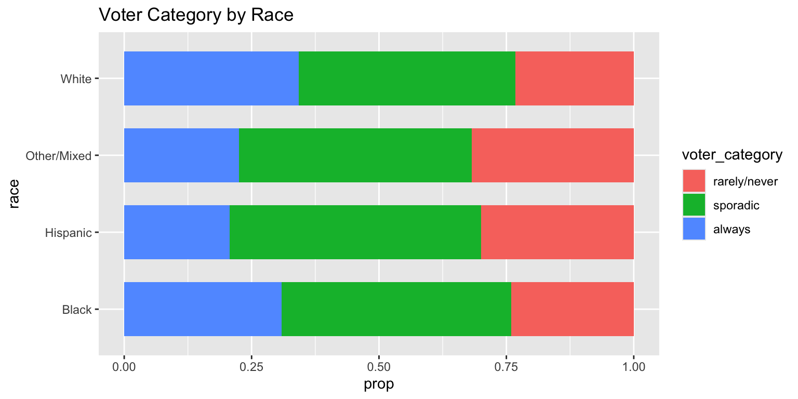
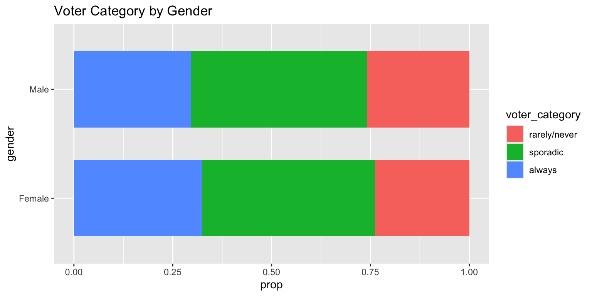
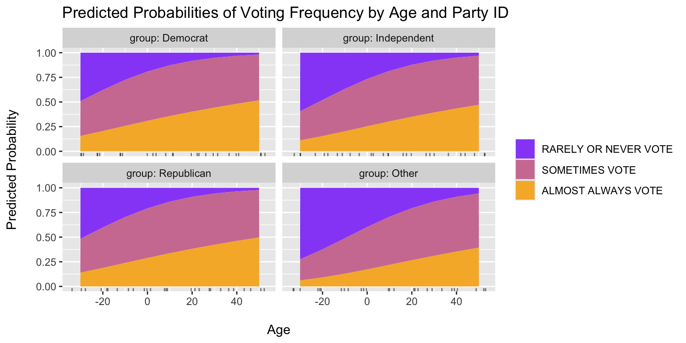
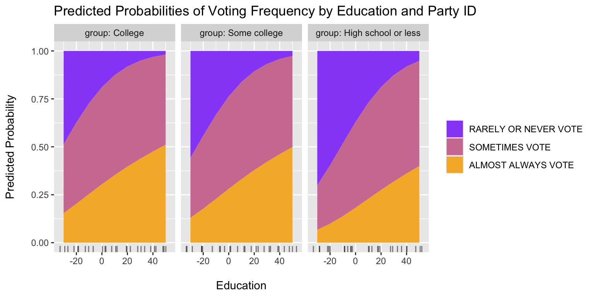

Code
library(nnet)
library(car)
library(tidyverse)
library(emmeans)
library(ggeffects)
library(knitr)
library(patchwork)
library(broom)
library(parameters)
library(easystats)Chantal Valdivia-Moreno
March 1, 2025
Lab Goal: Predict voting frequency using demographic variables Data source: FiveThirtyEight “Why Many Americans Don’t Vote” survey Method: Multinomial logistic regression
The data for this assignment comes from an online Ipsos survey that was conducted for the FiveThirtyEight article “Why Many Americans Don’t Vote”. You can read more about the survey design and respondents in the README of the GitHub repo for the data.
Respondents were asked a variety of questions about their political beliefs, thoughts on multiple issues, and voting behavior. We will focus on using the demographic variables and someone’s party identification to understand whether a person is a probable voter.
The variables we’ll focus on were (definitions from the codebook in data set GitHub repo):
ppage: Age of respondent
educ: Highest educational attainment category.
race: Race of respondent, census categories. Note: all categories except Hispanic were non-Hispanic.
gender: Gender of respondent
income_cat: Household income category of respondent
Q30: Response to the question “Generally speaking, do you think of yourself as a…”
voter_category: past voting behavior:
You can read in the data directly from the GitHub repo:
Q30 contains the respondent’s political party identification. Make a new variable that simplifies Q30 into four categories: “Democrat”, “Republican”, “Independent”, “Other” (“Other” also includes respondents who did not answer the question).voter_category identifies the respondent’s past voter behavior. Relevel the variable to make rarely/never the baseline level, followed by sporadic, then always [1] "always" "always" "sporadic" "sporadic"
[5] "always" "rarely/never" "always" "always"
[9] "always" "always" "sporadic" "sporadic"
[13] "rarely/never" "sporadic" "always" "sporadic"
[17] "always" "always" "always" "always"
[21] "rarely/never" "always" "sporadic" "sporadic"
[25] "sporadic" "always" "rarely/never" "sporadic"
[29] "always" "always" "always" "always"
[33] "rarely/never" "always" "sporadic" "sporadic"
[37] "sporadic" "sporadic" "always" "sporadic"
[41] "rarely/never" "sporadic" "always" "always"
[45] "always" "always" "always" "always"
[49] "always" "always" "sporadic" "sporadic"
[53] "always" "sporadic" "sporadic" "always"
[57] "sporadic" "always" "always" "always"
[61] "rarely/never" "always" "rarely/never" "sporadic"
[65] "rarely/never" "sporadic" "rarely/never" "rarely/never"
[69] "rarely/never" "always" "sporadic" "sporadic"
[73] "rarely/never" "sporadic" "rarely/never" "rarely/never"
[77] "sporadic" "always" "rarely/never" "rarely/never"
[81] "sporadic" "rarely/never" "always" "rarely/never"
[85] "always" "always" "sporadic" "always"
[89] "sporadic" "always" "always" "sporadic"
[93] "always" "sporadic" "always" "always"
[97] "rarely/never" "rarely/never" "rarely/never" "always"
[101] "rarely/never" "sporadic" "rarely/never" "always"
[105] "always" "sporadic" "sporadic" "always"
[109] "sporadic" "sporadic" "sporadic" "sporadic"
[113] "sporadic" "always" "always" "always"
[117] "always" "always" "always" "always"
[121] "sporadic" "sporadic" "sporadic" "rarely/never"
[125] "always" "sporadic" "always" "sporadic"
[129] "always" "rarely/never" "always" "rarely/never"
[133] "rarely/never" "always" "always" "sporadic"
[137] "sporadic" "always" "always" "sporadic"
[141] "always" "always" "always" "rarely/never"
[145] "always" "always" "always" "sporadic"
[149] "sporadic" "sporadic" "rarely/never" "sporadic"
[153] "always" "always" "always" "rarely/never"
[157] "always" "sporadic" "sporadic" "sporadic"
[161] "sporadic" "always" "always" "rarely/never"
[165] "sporadic" "sporadic" "sporadic" "sporadic"
[169] "sporadic" "always" "always" "rarely/never"
[173] "rarely/never" "sporadic" "rarely/never" "rarely/never"
[177] "sporadic" "rarely/never" "always" "always"
[181] "sporadic" "always" "sporadic" "always"
[185] "sporadic" "sporadic" "always" "always"
[189] "always" "always" "sporadic" "always"
[193] "always" "sporadic" "sporadic" "always"
[197] "sporadic" "sporadic" "sporadic" "always"
[201] "rarely/never" "always" "always" "rarely/never"
[205] "sporadic" "always" "always" "rarely/never"
[209] "rarely/never" "rarely/never" "always" "sporadic"
[213] "sporadic" "sporadic" "sporadic" "always"
[217] "sporadic" "always" "sporadic" "sporadic"
[221] "always" "always" "sporadic" "always"
[225] "sporadic" "always" "always" "rarely/never"
[229] "always" "sporadic" "rarely/never" "sporadic"
[233] "sporadic" "sporadic" "always" "sporadic"
[237] "sporadic" "sporadic" "always" "sporadic"
[241] "always" "rarely/never" "sporadic" "always"
[245] "always" "sporadic" "rarely/never" "always"
[249] "sporadic" "always" "sporadic" "always"
[253] "sporadic" "sporadic" "sporadic" "always"
[257] "always" "rarely/never" "rarely/never" "always"
[261] "always" "sporadic" "rarely/never" "sporadic"
[265] "sporadic" "always" "sporadic" "rarely/never"
[269] "sporadic" "sporadic" "sporadic" "rarely/never"
[273] "always" "always" "always" "rarely/never"
[277] "rarely/never" "sporadic" "sporadic" "always"
[281] "sporadic" "sporadic" "always" "always"
[285] "rarely/never" "always" "sporadic" "rarely/never"
[289] "always" "always" "sporadic" "always"
[293] "always" "always" "always" "sporadic"
[297] "always" "always" "always" "rarely/never"
[301] "always" "rarely/never" "sporadic" "sporadic"
[305] "always" "always" "sporadic" "always"
[309] "sporadic" "sporadic" "rarely/never" "sporadic"
[313] "sporadic" "always" "sporadic" "always"
[317] "always" "sporadic" "sporadic" "always"
[321] "always" "rarely/never" "sporadic" "always"
[325] "always" "sporadic" "sporadic" "always"
[329] "sporadic" "rarely/never" "always" "sporadic"
[333] "sporadic" "rarely/never" "sporadic" "sporadic"
[337] "always" "sporadic" "sporadic" "sporadic"
[341] "sporadic" "always" "sporadic" "sporadic"
[345] "sporadic" "always" "always" "always"
[349] "sporadic" "sporadic" "always" "sporadic"
[353] "always" "always" "rarely/never" "always"
[357] "sporadic" "sporadic" "sporadic" "rarely/never"
[361] "always" "always" "sporadic" "always"
[365] "sporadic" "sporadic" "sporadic" "always"
[369] "sporadic" "always" "sporadic" "sporadic"
[373] "always" "always" "sporadic" "always"
[377] "always" "always" "rarely/never" "always"
[381] "always" "always" "always" "always"
[385] "always" "rarely/never" "sporadic" "sporadic"
[389] "always" "always" "sporadic" "always"
[393] "always" "always" "sporadic" "always"
[397] "rarely/never" "sporadic" "sporadic" "always"
[401] "sporadic" "sporadic" "always" "sporadic"
[405] "sporadic" "rarely/never" "always" "always"
[409] "sporadic" "always" "always" "sporadic"
[413] "always" "always" "always" "rarely/never"
[417] "sporadic" "rarely/never" "sporadic" "rarely/never"
[421] "sporadic" "rarely/never" "always" "always"
[425] "rarely/never" "rarely/never" "sporadic" "always"
[429] "sporadic" "always" "sporadic" "always"
[433] "rarely/never" "sporadic" "sporadic" "always"
[437] "always" "always" "sporadic" "sporadic"
[441] "always" "always" "always" "always"
[445] "rarely/never" "always" "always" "always"
[449] "sporadic" "rarely/never" "always" "always"
[453] "sporadic" "rarely/never" "sporadic" "always"
[457] "sporadic" "always" "sporadic" "always"
[461] "sporadic" "always" "sporadic" "rarely/never"
[465] "always" "always" "sporadic" "sporadic"
[469] "sporadic" "always" "always" "always"
[473] "always" "always" "sporadic" "always"
[477] "always" "always" "always" "always"
[481] "rarely/never" "sporadic" "rarely/never" "sporadic"
[485] "rarely/never" "sporadic" "sporadic" "sporadic"
[489] "always" "sporadic" "always" "rarely/never"
[493] "always" "always" "always" "sporadic"
[497] "sporadic" "always" "sporadic" "always"
[501] "sporadic" "sporadic" "rarely/never" "always"
[505] "always" "rarely/never" "always" "always"
[509] "always" "always" "always" "sporadic"
[513] "always" "sporadic" "rarely/never" "rarely/never"
[517] "sporadic" "always" "sporadic" "always"
[521] "sporadic" "always" "sporadic" "sporadic"
[525] "always" "always" "sporadic" "always"
[529] "sporadic" "always" "sporadic" "always"
[533] "always" "always" "sporadic" "always"
[537] "always" "always" "always" "sporadic"
[541] "always" "always" "always" "sporadic"
[545] "rarely/never" "sporadic" "always" "sporadic"
[549] "always" "always" "sporadic" "always"
[553] "sporadic" "rarely/never" "sporadic" "always"
[557] "always" "sporadic" "always" "always"
[561] "rarely/never" "sporadic" "sporadic" "always"
[565] "sporadic" "always" "sporadic" "sporadic"
[569] "sporadic" "always" "always" "always"
[573] "always" "sporadic" "always" "sporadic"
[577] "always" "rarely/never" "always" "rarely/never"
[581] "always" "always" "always" "always"
[585] "always" "always" "rarely/never" "always"
[589] "sporadic" "sporadic" "rarely/never" "rarely/never"
[593] "sporadic" "sporadic" "sporadic" "sporadic"
[597] "always" "sporadic" "sporadic" "always"
[601] "sporadic" "rarely/never" "rarely/never" "sporadic"
[605] "always" "always" "sporadic" "always"
[609] "sporadic" "sporadic" "sporadic" "sporadic"
[613] "always" "always" "sporadic" "always"
[617] "sporadic" "rarely/never" "sporadic" "always"
[621] "sporadic" "sporadic" "always" "always"
[625] "always" "always" "always" "sporadic"
[629] "rarely/never" "sporadic" "always" "rarely/never"
[633] "always" "sporadic" "sporadic" "sporadic"
[637] "always" "sporadic" "sporadic" "always"
[641] "always" "always" "sporadic" "sporadic"
[645] "sporadic" "always" "sporadic" "sporadic"
[649] "sporadic" "always" "always" "sporadic"
[653] "always" "always" "rarely/never" "sporadic"
[657] "sporadic" "sporadic" "sporadic" "always"
[661] "always" "sporadic" "always" "sporadic"
[665] "always" "always" "always" "sporadic"
[669] "sporadic" "rarely/never" "sporadic" "sporadic"
[673] "rarely/never" "sporadic" "always" "sporadic"
[677] "sporadic" "always" "sporadic" "always"
[681] "always" "always" "always" "always"
[685] "always" "sporadic" "sporadic" "always"
[689] "always" "always" "sporadic" "always"
[693] "rarely/never" "always" "always" "sporadic"
[697] "sporadic" "rarely/never" "sporadic" "sporadic"
[701] "always" "sporadic" "always" "always"
[705] "always" "always" "always" "always"
[709] "sporadic" "always" "rarely/never" "sporadic"
[713] "always" "sporadic" "always" "sporadic"
[717] "sporadic" "always" "always" "always"
[721] "sporadic" "sporadic" "always" "rarely/never"
[725] "sporadic" "rarely/never" "always" "sporadic"
[729] "sporadic" "sporadic" "sporadic" "rarely/never"
[733] "sporadic" "always" "sporadic" "always"
[737] "sporadic" "always" "always" "always"
[741] "always" "always" "always" "sporadic"
[745] "sporadic" "sporadic" "always" "sporadic"
[749] "sporadic" "rarely/never" "sporadic" "sporadic"
[753] "sporadic" "sporadic" "always" "always"
[757] "sporadic" "rarely/never" "sporadic" "always"
[761] "always" "sporadic" "always" "always"
[765] "sporadic" "always" "sporadic" "sporadic"
[769] "rarely/never" "sporadic" "sporadic" "sporadic"
[773] "always" "always" "always" "always"
[777] "sporadic" "always" "always" "sporadic"
[781] "always" "always" "sporadic" "sporadic"
[785] "always" "sporadic" "always" "always"
[789] "sporadic" "sporadic" "rarely/never" "always"
[793] "always" "always" "sporadic" "always"
[797] "sporadic" "always" "rarely/never" "sporadic"
[801] "always" "sporadic" "always" "always"
[805] "always" "sporadic" "sporadic" "sporadic"
[809] "always" "sporadic" "sporadic" "rarely/never"
[813] "rarely/never" "sporadic" "sporadic" "sporadic"
[817] "always" "rarely/never" "sporadic" "sporadic"
[821] "always" "always" "always" "sporadic"
[825] "sporadic" "always" "always" "sporadic"
[829] "sporadic" "rarely/never" "sporadic" "sporadic"
[833] "sporadic" "always" "sporadic" "always"
[837] "always" "always" "always" "sporadic"
[841] "rarely/never" "always" "always" "sporadic"
[845] "always" "always" "always" "always"
[849] "always" "always" "always" "sporadic"
[853] "sporadic" "always" "sporadic" "always"
[857] "always" "always" "sporadic" "rarely/never"
[861] "always" "always" "sporadic" "sporadic"
[865] "sporadic" "sporadic" "sporadic" "always"
[869] "always" "always" "sporadic" "always"
[873] "rarely/never" "always" "rarely/never" "sporadic"
[877] "always" "sporadic" "always" "rarely/never"
[881] "always" "rarely/never" "always" "always"
[885] "always" "sporadic" "always" "sporadic"
[889] "sporadic" "rarely/never" "sporadic" "sporadic"
[893] "sporadic" "rarely/never" "always" "rarely/never"
[897] "always" "always" "sporadic" "sporadic"
[901] "sporadic" "sporadic" "always" "sporadic"
[905] "rarely/never" "always" "sporadic" "always"
[909] "always" "always" "always" "always"
[913] "sporadic" "always" "always" "sporadic"
[917] "always" "always" "always" "always"
[921] "always" "rarely/never" "always" "sporadic"
[925] "always" "sporadic" "always" "always"
[929] "sporadic" "always" "always" "rarely/never"
[933] "always" "sporadic" "always" "sporadic"
[937] "always" "always" "sporadic" "always"
[941] "always" "always" "always" "always"
[945] "rarely/never" "always" "rarely/never" "always"
[949] "rarely/never" "always" "always" "sporadic"
[953] "sporadic" "always" "always" "rarely/never"
[957] "always" "always" "sporadic" "always"
[961] "always" "sporadic" "sporadic" "sporadic"
[965] "always" "always" "always" "always"
[969] "sporadic" "always" "sporadic" "rarely/never"
[973] "sporadic" "always" "sporadic" "sporadic"
[977] "always" "sporadic" "always" "rarely/never"
[981] "always" "sporadic" "sporadic" "rarely/never"
[985] "sporadic" "always" "sporadic" "sporadic"
[989] "sporadic" "sporadic" "always" "rarely/never"
[993] "always" "always" "sporadic" "always"
[997] "always" "always" "sporadic" "always"
[1001] "always" "sporadic" "always" "always"
[1005] "sporadic" "always" "always" "rarely/never"
[1009] "always" "sporadic" "always" "rarely/never"
[1013] "always" "sporadic" "always" "sporadic"
[1017] "sporadic" "always" "always" "always"
[1021] "sporadic" "sporadic" "sporadic" "sporadic"
[1025] "sporadic" "sporadic" "rarely/never" "sporadic"
[1029] "always" "always" "always" "sporadic"
[1033] "sporadic" "sporadic" "sporadic" "rarely/never"
[1037] "sporadic" "always" "sporadic" "always"
[1041] "rarely/never" "sporadic" "always" "sporadic"
[1045] "sporadic" "always" "rarely/never" "sporadic"
[1049] "always" "rarely/never" "always" "sporadic"
[1053] "always" "sporadic" "rarely/never" "always"
[1057] "sporadic" "sporadic" "sporadic" "rarely/never"
[1061] "sporadic" "rarely/never" "always" "always"
[1065] "sporadic" "sporadic" "always" "always"
[1069] "rarely/never" "sporadic" "rarely/never" "always"
[1073] "sporadic" "rarely/never" "always" "always"
[1077] "sporadic" "sporadic" "sporadic" "always"
[1081] "sporadic" "sporadic" "rarely/never" "always"
[1085] "always" "rarely/never" "sporadic" "always"
[1089] "always" "sporadic" "rarely/never" "sporadic"
[1093] "always" "sporadic" "always" "always"
[1097] "sporadic" "sporadic" "always" "rarely/never"
[1101] "sporadic" "sporadic" "always" "always"
[1105] "sporadic" "sporadic" "always" "always"
[1109] "sporadic" "rarely/never" "rarely/never" "rarely/never"
[1113] "sporadic" "always" "sporadic" "sporadic"
[1117] "sporadic" "sporadic" "sporadic" "rarely/never"
[1121] "sporadic" "sporadic" "sporadic" "always"
[1125] "sporadic" "sporadic" "sporadic" "sporadic"
[1129] "always" "sporadic" "rarely/never" "sporadic"
[1133] "rarely/never" "sporadic" "rarely/never" "sporadic"
[1137] "sporadic" "sporadic" "always" "sporadic"
[1141] "rarely/never" "always" "sporadic" "always"
[1145] "sporadic" "rarely/never" "always" "sporadic"
[1149] "rarely/never" "sporadic" "sporadic" "always"
[1153] "sporadic" "sporadic" "rarely/never" "rarely/never"
[1157] "always" "always" "sporadic" "always"
[1161] "sporadic" "rarely/never" "sporadic" "always"
[1165] "rarely/never" "rarely/never" "sporadic" "sporadic"
[1169] "sporadic" "sporadic" "rarely/never" "sporadic"
[1173] "sporadic" "always" "sporadic" "rarely/never"
[1177] "always" "sporadic" "sporadic" "rarely/never"
[1181] "rarely/never" "sporadic" "rarely/never" "sporadic"
[1185] "sporadic" "rarely/never" "rarely/never" "rarely/never"
[1189] "sporadic" "sporadic" "always" "sporadic"
[1193] "always" "sporadic" "sporadic" "always"
[1197] "always" "sporadic" "rarely/never" "sporadic"
[1201] "rarely/never" "sporadic" "sporadic" "rarely/never"
[1205] "sporadic" "always" "rarely/never" "always"
[1209] "rarely/never" "rarely/never" "rarely/never" "rarely/never"
[1213] "sporadic" "always" "rarely/never" "always"
[1217] "sporadic" "always" "sporadic" "sporadic"
[1221] "rarely/never" "sporadic" "always" "sporadic"
[1225] "sporadic" "always" "always" "sporadic"
[1229] "sporadic" "always" "sporadic" "sporadic"
[1233] "sporadic" "always" "sporadic" "always"
[1237] "sporadic" "always" "sporadic" "rarely/never"
[1241] "sporadic" "always" "sporadic" "always"
[1245] "rarely/never" "rarely/never" "sporadic" "sporadic"
[1249] "always" "sporadic" "always" "sporadic"
[1253] "sporadic" "sporadic" "always" "always"
[1257] "sporadic" "rarely/never" "sporadic" "sporadic"
[1261] "rarely/never" "sporadic" "always" "always"
[1265] "always" "always" "sporadic" "sporadic"
[1269] "always" "always" "rarely/never" "always"
[1273] "rarely/never" "always" "sporadic" "rarely/never"
[1277] "sporadic" "sporadic" "sporadic" "sporadic"
[1281] "sporadic" "sporadic" "sporadic" "always"
[1285] "sporadic" "sporadic" "sporadic" "rarely/never"
[1289] "sporadic" "sporadic" "always" "always"
[1293] "sporadic" "sporadic" "rarely/never" "rarely/never"
[1297] "rarely/never" "rarely/never" "sporadic" "rarely/never"
[1301] "always" "sporadic" "rarely/never" "rarely/never"
[1305] "sporadic" "sporadic" "always" "sporadic"
[1309] "rarely/never" "always" "always" "sporadic"
[1313] "sporadic" "always" "sporadic" "sporadic"
[1317] "rarely/never" "sporadic" "always" "always"
[1321] "always" "sporadic" "rarely/never" "sporadic"
[1325] "always" "always" "always" "always"
[1329] "always" "sporadic" "sporadic" "sporadic"
[1333] "rarely/never" "rarely/never" "rarely/never" "always"
[1337] "always" "sporadic" "sporadic" "rarely/never"
[1341] "sporadic" "sporadic" "always" "sporadic"
[1345] "always" "rarely/never" "always" "sporadic"
[1349] "always" "sporadic" "sporadic" "sporadic"
[1353] "sporadic" "sporadic" "sporadic" "rarely/never"
[1357] "always" "sporadic" "sporadic" "rarely/never"
[1361] "sporadic" "always" "rarely/never" "rarely/never"
[1365] "sporadic" "rarely/never" "sporadic" "sporadic"
[1369] "always" "rarely/never" "sporadic" "sporadic"
[1373] "rarely/never" "rarely/never" "always" "sporadic"
[1377] "always" "always" "rarely/never" "sporadic"
[1381] "always" "always" "sporadic" "sporadic"
[1385] "always" "sporadic" "sporadic" "rarely/never"
[1389] "always" "sporadic" "rarely/never" "sporadic"
[1393] "always" "always" "rarely/never" "sporadic"
[1397] "sporadic" "rarely/never" "always" "sporadic"
[1401] "sporadic" "sporadic" "rarely/never" "always"
[1405] "sporadic" "always" "sporadic" "sporadic"
[1409] "sporadic" "sporadic" "sporadic" "rarely/never"
[1413] "sporadic" "always" "rarely/never" "rarely/never"
[1417] "always" "sporadic" "sporadic" "sporadic"
[1421] "sporadic" "always" "rarely/never" "always"
[1425] "sporadic" "sporadic" "sporadic" "always"
[1429] "always" "sporadic" "always" "always"
[1433] "sporadic" "always" "sporadic" "rarely/never"
[1437] "always" "always" "always" "always"
[1441] "rarely/never" "always" "rarely/never" "sporadic"
[1445] "always" "sporadic" "always" "rarely/never"
[1449] "always" "sporadic" "always" "sporadic"
[1453] "rarely/never" "always" "sporadic" "rarely/never"
[1457] "always" "always" "sporadic" "always"
[1461] "sporadic" "sporadic" "rarely/never" "sporadic"
[1465] "sporadic" "sporadic" "rarely/never" "rarely/never"
[1469] "always" "sporadic" "always" "sporadic"
[1473] "rarely/never" "rarely/never" "sporadic" "sporadic"
[1477] "rarely/never" "sporadic" "sporadic" "sporadic"
[1481] "rarely/never" "sporadic" "rarely/never" "rarely/never"
[1485] "sporadic" "sporadic" "sporadic" "always"
[1489] "sporadic" "rarely/never" "sporadic" "rarely/never"
[1493] "sporadic" "rarely/never" "always" "sporadic"
[1497] "sporadic" "sporadic" "sporadic" "always"
[1501] "always" "always" "sporadic" "always"
[1505] "always" "always" "sporadic" "sporadic"
[1509] "rarely/never" "sporadic" "rarely/never" "always"
[1513] "sporadic" "sporadic" "sporadic" "sporadic"
[1517] "sporadic" "always" "sporadic" "rarely/never"
[1521] "always" "rarely/never" "rarely/never" "rarely/never"
[1525] "always" "always" "rarely/never" "sporadic"
[1529] "sporadic" "always" "rarely/never" "always"
[1533] "sporadic" "always" "sporadic" "always"
[1537] "rarely/never" "always" "sporadic" "always"
[1541] "always" "sporadic" "sporadic" "always"
[1545] "always" "sporadic" "always" "always"
[1549] "always" "always" "sporadic" "sporadic"
[1553] "rarely/never" "rarely/never" "always" "sporadic"
[1557] "sporadic" "sporadic" "always" "sporadic"
[1561] "sporadic" "rarely/never" "rarely/never" "sporadic"
[1565] "rarely/never" "sporadic" "sporadic" "sporadic"
[1569] "sporadic" "always" "sporadic" "always"
[1573] "sporadic" "always" "rarely/never" "sporadic"
[1577] "always" "rarely/never" "rarely/never" "always"
[1581] "always" "sporadic" "rarely/never" "rarely/never"
[1585] "always" "always" "always" "rarely/never"
[1589] "rarely/never" "sporadic" "rarely/never" "always"
[1593] "sporadic" "always" "sporadic" "sporadic"
[1597] "always" "sporadic" "sporadic" "rarely/never"
[1601] "sporadic" "sporadic" "always" "sporadic"
[1605] "always" "sporadic" "always" "sporadic"
[1609] "rarely/never" "always" "rarely/never" "always"
[1613] "sporadic" "sporadic" "sporadic" "rarely/never"
[1617] "always" "sporadic" "always" "sporadic"
[1621] "rarely/never" "sporadic" "rarely/never" "always"
[1625] "sporadic" "rarely/never" "sporadic" "rarely/never"
[1629] "sporadic" "sporadic" "sporadic" "rarely/never"
[1633] "sporadic" "sporadic" "rarely/never" "sporadic"
[1637] "sporadic" "sporadic" "sporadic" "always"
[1641] "sporadic" "sporadic" "sporadic" "sporadic"
[1645] "sporadic" "always" "always" "sporadic"
[1649] "sporadic" "sporadic" "sporadic" "rarely/never"
[1653] "always" "sporadic" "rarely/never" "rarely/never"
[1657] "rarely/never" "rarely/never" "sporadic" "rarely/never"
[1661] "sporadic" "sporadic" "rarely/never" "rarely/never"
[1665] "sporadic" "always" "always" "sporadic"
[1669] "always" "rarely/never" "always" "always"
[1673] "sporadic" "always" "always" "always"
[1677] "sporadic" "sporadic" "sporadic" "rarely/never"
[1681] "rarely/never" "sporadic" "sporadic" "always"
[1685] "sporadic" "rarely/never" "rarely/never" "sporadic"
[1689] "always" "sporadic" "sporadic" "sporadic"
[1693] "rarely/never" "sporadic" "sporadic" "rarely/never"
[1697] "always" "sporadic" "sporadic" "sporadic"
[1701] "rarely/never" "sporadic" "sporadic" "always"
[1705] "sporadic" "sporadic" "sporadic" "rarely/never"
[1709] "rarely/never" "always" "always" "sporadic"
[1713] "sporadic" "sporadic" "sporadic" "sporadic"
[1717] "sporadic" "sporadic" "rarely/never" "rarely/never"
[1721] "rarely/never" "sporadic" "rarely/never" "always"
[1725] "always" "rarely/never" "sporadic" "sporadic"
[1729] "rarely/never" "sporadic" "always" "rarely/never"
[1733] "rarely/never" "sporadic" "always" "always"
[1737] "rarely/never" "sporadic" "sporadic" "sporadic"
[1741] "sporadic" "sporadic" "rarely/never" "always"
[1745] "always" "always" "sporadic" "always"
[1749] "always" "always" "sporadic" "sporadic"
[1753] "always" "sporadic" "rarely/never" "rarely/never"
[1757] "rarely/never" "rarely/never" "sporadic" "always"
[1761] "rarely/never" "rarely/never" "always" "sporadic"
[1765] "rarely/never" "rarely/never" "rarely/never" "always"
[1769] "sporadic" "sporadic" "rarely/never" "sporadic"
[1773] "sporadic" "sporadic" "rarely/never" "rarely/never"
[1777] "sporadic" "rarely/never" "always" "always"
[1781] "always" "rarely/never" "always" "rarely/never"
[1785] "rarely/never" "sporadic" "sporadic" "sporadic"
[1789] "rarely/never" "always" "sporadic" "always"
[1793] "sporadic" "sporadic" "sporadic" "always"
[1797] "always" "always" "sporadic" "rarely/never"
[1801] "rarely/never" "always" "always" "sporadic"
[1805] "sporadic" "rarely/never" "sporadic" "sporadic"
[1809] "sporadic" "sporadic" "rarely/never" "sporadic"
[1813] "always" "sporadic" "sporadic" "sporadic"
[1817] "sporadic" "rarely/never" "sporadic" "sporadic"
[1821] "sporadic" "rarely/never" "sporadic" "sporadic"
[1825] "always" "always" "sporadic" "sporadic"
[1829] "sporadic" "always" "rarely/never" "sporadic"
[1833] "rarely/never" "sporadic" "always" "always"
[1837] "always" "sporadic" "always" "rarely/never"
[1841] "sporadic" "sporadic" "sporadic" "sporadic"
[1845] "sporadic" "always" "sporadic" "always"
[1849] "sporadic" "sporadic" "sporadic" "sporadic"
[1853] "always" "always" "sporadic" "sporadic"
[1857] "sporadic" "sporadic" "always" "always"
[1861] "always" "sporadic" "always" "rarely/never"
[1865] "sporadic" "always" "sporadic" "sporadic"
[1869] "rarely/never" "sporadic" "sporadic" "sporadic"
[1873] "always" "always" "sporadic" "sporadic"
[1877] "always" "always" "always" "always"
[1881] "sporadic" "sporadic" "sporadic" "always"
[1885] "always" "always" "always" "sporadic"
[1889] "sporadic" "rarely/never" "sporadic" "always"
[1893] "always" "sporadic" "always" "always"
[1897] "always" "always" "always" "rarely/never"
[1901] "sporadic" "rarely/never" "always" "rarely/never"
[1905] "sporadic" "rarely/never" "sporadic" "sporadic"
[1909] "sporadic" "sporadic" "rarely/never" "always"
[1913] "sporadic" "always" "sporadic" "always"
[1917] "sporadic" "sporadic" "sporadic" "sporadic"
[1921] "rarely/never" "rarely/never" "rarely/never" "rarely/never"
[1925] "sporadic" "sporadic" "sporadic" "sporadic"
[1929] "always" "sporadic" "sporadic" "always"
[1933] "sporadic" "rarely/never" "sporadic" "rarely/never"
[1937] "sporadic" "sporadic" "rarely/never" "always"
[1941] "rarely/never" "sporadic" "always" "always"
[1945] "always" "sporadic" "sporadic" "rarely/never"
[1949] "sporadic" "sporadic" "sporadic" "always"
[1953] "sporadic" "sporadic" "sporadic" "sporadic"
[1957] "sporadic" "always" "rarely/never" "rarely/never"
[1961] "rarely/never" "sporadic" "rarely/never" "sporadic"
[1965] "rarely/never" "always" "sporadic" "sporadic"
[1969] "rarely/never" "rarely/never" "always" "always"
[1973] "rarely/never" "always" "always" "sporadic"
[1977] "sporadic" "sporadic" "sporadic" "sporadic"
[1981] "sporadic" "always" "always" "sporadic"
[1985] "always" "sporadic" "sporadic" "sporadic"
[1989] "sporadic" "always" "always" "always"
[1993] "sporadic" "rarely/never" "always" "sporadic"
[1997] "always" "rarely/never" "rarely/never" "always"
[2001] "sporadic" "always" "always" "sporadic"
[2005] "always" "always" "always" "sporadic"
[2009] "rarely/never" "sporadic" "always" "always"
[2013] "always" "rarely/never" "sporadic" "sporadic"
[2017] "rarely/never" "sporadic" "always" "sporadic"
[2021] "always" "always" "always" "sporadic"
[2025] "always" "sporadic" "always" "always"
[2029] "always" "sporadic" "sporadic" "rarely/never"
[2033] "always" "sporadic" "sporadic" "sporadic"
[2037] "sporadic" "sporadic" "rarely/never" "sporadic"
[2041] "always" "always" "sporadic" "sporadic"
[2045] "sporadic" "always" "sporadic" "always"
[2049] "sporadic" "sporadic" "sporadic" "always"
[2053] "sporadic" "rarely/never" "always" "always"
[2057] "always" "sporadic" "rarely/never" "rarely/never"
[2061] "rarely/never" "sporadic" "rarely/never" "sporadic"
[2065] "always" "rarely/never" "sporadic" "rarely/never"
[2069] "sporadic" "always" "sporadic" "sporadic"
[2073] "always" "sporadic" "sporadic" "always"
[2077] "sporadic" "sporadic" "always" "always"
[2081] "sporadic" "always" "sporadic" "sporadic"
[2085] "sporadic" "always" "sporadic" "rarely/never"
[2089] "sporadic" "sporadic" "always" "rarely/never"
[2093] "sporadic" "always" "sporadic" "rarely/never"
[2097] "rarely/never" "always" "sporadic" "rarely/never"
[2101] "rarely/never" "always" "rarely/never" "sporadic"
[2105] "always" "sporadic" "sporadic" "sporadic"
[2109] "always" "always" "sporadic" "rarely/never"
[2113] "rarely/never" "sporadic" "rarely/never" "rarely/never"
[2117] "rarely/never" "sporadic" "always" "sporadic"
[2121] "sporadic" "rarely/never" "rarely/never" "sporadic"
[2125] "always" "rarely/never" "sporadic" "sporadic"
[2129] "sporadic" "always" "sporadic" "sporadic"
[2133] "sporadic" "always" "sporadic" "always"
[2137] "always" "rarely/never" "always" "always"
[2141] "sporadic" "always" "sporadic" "rarely/never"
[2145] "sporadic" "rarely/never" "sporadic" "sporadic"
[2149] "always" "always" "always" "sporadic"
[2153] "always" "sporadic" "rarely/never" "rarely/never"
[2157] "always" "rarely/never" "rarely/never" "always"
[2161] "sporadic" "always" "always" "always"
[2165] "sporadic" "sporadic" "sporadic" "always"
[2169] "sporadic" "sporadic" "sporadic" "always"
[2173] "sporadic" "rarely/never" "always" "always"
[2177] "always" "always" "always" "rarely/never"
[2181] "sporadic" "sporadic" "rarely/never" "rarely/never"
[2185] "sporadic" "sporadic" "rarely/never" "always"
[2189] "sporadic" "sporadic" "always" "sporadic"
[2193] "rarely/never" "always" "rarely/never" "sporadic"
[2197] "sporadic" "always" "sporadic" "always"
[2201] "rarely/never" "always" "sporadic" "sporadic"
[2205] "rarely/never" "rarely/never" "always" "always"
[2209] "always" "sporadic" "rarely/never" "always"
[2213] "always" "sporadic" "sporadic" "sporadic"
[2217] "sporadic" "always" "always" "always"
[2221] "sporadic" "sporadic" "sporadic" "sporadic"
[2225] "rarely/never" "always" "always" "always"
[2229] "always" "rarely/never" "always" "sporadic"
[2233] "rarely/never" "sporadic" "always" "always"
[2237] "always" "always" "sporadic" "always"
[2241] "sporadic" "sporadic" "rarely/never" "sporadic"
[2245] "rarely/never" "sporadic" "always" "sporadic"
[2249] "always" "always" "rarely/never" "sporadic"
[2253] "rarely/never" "always" "sporadic" "sporadic"
[2257] "rarely/never" "sporadic" "sporadic" "sporadic"
[2261] "rarely/never" "rarely/never" "sporadic" "sporadic"
[2265] "sporadic" "always" "rarely/never" "always"
[2269] "sporadic" "sporadic" "rarely/never" "always"
[2273] "sporadic" "always" "sporadic" "rarely/never"
[2277] "always" "sporadic" "always" "sporadic"
[2281] "rarely/never" "always" "sporadic" "always"
[2285] "sporadic" "sporadic" "rarely/never" "sporadic"
[2289] "rarely/never" "always" "sporadic" "rarely/never"
[2293] "sporadic" "always" "always" "always"
[2297] "sporadic" "sporadic" "rarely/never" "always"
[2301] "sporadic" "always" "sporadic" "sporadic"
[2305] "always" "rarely/never" "sporadic" "rarely/never"
[2309] "always" "sporadic" "rarely/never" "sporadic"
[2313] "sporadic" "rarely/never" "sporadic" "sporadic"
[2317] "sporadic" "sporadic" "sporadic" "sporadic"
[2321] "sporadic" "sporadic" "always" "rarely/never"
[2325] "sporadic" "sporadic" "rarely/never" "rarely/never"
[2329] "always" "sporadic" "rarely/never" "sporadic"
[2333] "rarely/never" "rarely/never" "always" "always"
[2337] "always" "always" "always" "rarely/never"
[2341] "always" "sporadic" "rarely/never" "always"
[2345] "sporadic" "sporadic" "always" "always"
[2349] "rarely/never" "rarely/never" "always" "sporadic"
[2353] "sporadic" "rarely/never" "rarely/never" "always"
[2357] "always" "sporadic" "sporadic" "always"
[2361] "always" "always" "rarely/never" "sporadic"
[2365] "sporadic" "sporadic" "sporadic" "always"
[2369] "sporadic" "rarely/never" "sporadic" "rarely/never"
[2373] "sporadic" "sporadic" "sporadic" "always"
[2377] "always" "sporadic" "sporadic" "sporadic"
[2381] "rarely/never" "always" "always" "sporadic"
[2385] "sporadic" "rarely/never" "always" "always"
[2389] "sporadic" "always" "rarely/never" "sporadic"
[2393] "sporadic" "sporadic" "rarely/never" "sporadic"
[2397] "sporadic" "rarely/never" "rarely/never" "rarely/never"
[2401] "rarely/never" "always" "always" "always"
[2405] "rarely/never" "sporadic" "always" "always"
[2409] "sporadic" "rarely/never" "rarely/never" "rarely/never"
[2413] "sporadic" "always" "rarely/never" "rarely/never"
[2417] "rarely/never" "always" "always" "always"
[2421] "always" "rarely/never" "always" "always"
[2425] "sporadic" "sporadic" "rarely/never" "rarely/never"
[2429] "sporadic" "always" "always" "always"
[2433] "always" "sporadic" "sporadic" "always"
[2437] "always" "sporadic" "sporadic" "sporadic"
[2441] "sporadic" "sporadic" "rarely/never" "sporadic"
[2445] "sporadic" "sporadic" "sporadic" "sporadic"
[2449] "always" "rarely/never" "sporadic" "always"
[2453] "always" "sporadic" "rarely/never" "always"
[2457] "sporadic" "always" "always" "sporadic"
[2461] "always" "always" "sporadic" "sporadic"
[2465] "rarely/never" "sporadic" "sporadic" "sporadic"
[2469] "sporadic" "sporadic" "always" "always"
[2473] "rarely/never" "sporadic" "sporadic" "sporadic"
[2477] "always" "always" "sporadic" "sporadic"
[2481] "sporadic" "sporadic" "rarely/never" "sporadic"
[2485] "always" "sporadic" "always" "sporadic"
[2489] "sporadic" "always" "sporadic" "always"
[2493] "always" "rarely/never" "rarely/never" "rarely/never"
[2497] "rarely/never" "rarely/never" "sporadic" "rarely/never"
[2501] "sporadic" "sporadic" "rarely/never" "rarely/never"
[2505] "rarely/never" "rarely/never" "always" "always"
[2509] "sporadic" "sporadic" "always" "rarely/never"
[2513] "sporadic" "rarely/never" "always" "rarely/never"
[2517] "always" "rarely/never" "sporadic" "rarely/never"
[2521] "sporadic" "rarely/never" "sporadic" "rarely/never"
[2525] "always" "rarely/never" "rarely/never" "always"
[2529] "sporadic" "always" "sporadic" "always"
[2533] "rarely/never" "rarely/never" "rarely/never" "always"
[2537] "rarely/never" "rarely/never" "always" "rarely/never"
[2541] "sporadic" "rarely/never" "sporadic" "rarely/never"
[2545] "always" "sporadic" "sporadic" "rarely/never"
[2549] "always" "always" "always" "sporadic"
[2553] "rarely/never" "sporadic" "sporadic" "rarely/never"
[2557] "sporadic" "rarely/never" "sporadic" "rarely/never"
[2561] "rarely/never" "rarely/never" "sporadic" "sporadic"
[2565] "sporadic" "sporadic" "rarely/never" "rarely/never"
[2569] "sporadic" "sporadic" "rarely/never" "rarely/never"
[2573] "always" "rarely/never" "sporadic" "always"
[2577] "sporadic" "always" "sporadic" "always"
[2581] "sporadic" "always" "always" "sporadic"
[2585] "always" "sporadic" "sporadic" "always"
[2589] "always" "sporadic" "sporadic" "sporadic"
[2593] "rarely/never" "always" "sporadic" "rarely/never"
[2597] "rarely/never" "sporadic" "sporadic" "always"
[2601] "rarely/never" "always" "sporadic" "sporadic"
[2605] "sporadic" "sporadic" "always" "sporadic"
[2609] "sporadic" "always" "sporadic" "always"
[2613] "always" "sporadic" "rarely/never" "always"
[2617] "rarely/never" "always" "always" "rarely/never"
[2621] "rarely/never" "rarely/never" "always" "rarely/never"
[2625] "rarely/never" "sporadic" "sporadic" "always"
[2629] "sporadic" "sporadic" "rarely/never" "sporadic"
[2633] "always" "sporadic" "sporadic" "sporadic"
[2637] "sporadic" "rarely/never" "rarely/never" "sporadic"
[2641] "always" "sporadic" "rarely/never" "sporadic"
[2645] "sporadic" "always" "sporadic" "always"
[2649] "sporadic" "sporadic" "sporadic" "rarely/never"
[2653] "sporadic" "sporadic" "rarely/never" "rarely/never"
[2657] "sporadic" "sporadic" "always" "sporadic"
[2661] "sporadic" "sporadic" "sporadic" "sporadic"
[2665] "sporadic" "sporadic" "always" "sporadic"
[2669] "rarely/never" "always" "sporadic" "rarely/never"
[2673] "sporadic" "always" "rarely/never" "sporadic"
[2677] "rarely/never" "always" "sporadic" "sporadic"
[2681] "sporadic" "sporadic" "sporadic" "sporadic"
[2685] "sporadic" "always" "rarely/never" "sporadic"
[2689] "always" "sporadic" "sporadic" "always"
[2693] "rarely/never" "sporadic" "always" "sporadic"
[2697] "sporadic" "always" "always" "sporadic"
[2701] "sporadic" "sporadic" "sporadic" "sporadic"
[2705] "rarely/never" "always" "sporadic" "sporadic"
[2709] "sporadic" "rarely/never" "sporadic" "always"
[2713] "sporadic" "sporadic" "sporadic" "sporadic"
[2717] "rarely/never" "sporadic" "always" "sporadic"
[2721] "always" "always" "sporadic" "rarely/never"
[2725] "rarely/never" "always" "sporadic" "sporadic"
[2729] "sporadic" "sporadic" "always" "rarely/never"
[2733] "sporadic" "always" "rarely/never" "rarely/never"
[2737] "sporadic" "rarely/never" "sporadic" "sporadic"
[2741] "rarely/never" "sporadic" "always" "rarely/never"
[2745] "rarely/never" "always" "sporadic" "sporadic"
[2749] "sporadic" "rarely/never" "rarely/never" "rarely/never"
[2753] "sporadic" "sporadic" "sporadic" "rarely/never"
[2757] "always" "sporadic" "always" "rarely/never"
[2761] "sporadic" "sporadic" "sporadic" "always"
[2765] "rarely/never" "sporadic" "rarely/never" "always"
[2769] "always" "rarely/never" "sporadic" "rarely/never"
[2773] "rarely/never" "sporadic" "rarely/never" "sporadic"
[2777] "rarely/never" "always" "sporadic" "rarely/never"
[2781] "rarely/never" "sporadic" "sporadic" "rarely/never"
[2785] "sporadic" "sporadic" "sporadic" "rarely/never"
[2789] "always" "rarely/never" "sporadic" "always"
[2793] "sporadic" "sporadic" "always" "rarely/never"
[2797] "sporadic" "always" "rarely/never" "always"
[2801] "sporadic" "rarely/never" "always" "always"
[2805] "rarely/never" "sporadic" "sporadic" "sporadic"
[2809] "rarely/never" "always" "sporadic" "always"
[2813] "always" "sporadic" "sporadic" "always"
[2817] "sporadic" "sporadic" "always" "always"
[2821] "sporadic" "sporadic" "rarely/never" "sporadic"
[2825] "sporadic" "rarely/never" "always" "sporadic"
[2829] "sporadic" "sporadic" "always" "sporadic"
[2833] "always" "always" "rarely/never" "sporadic"
[2837] "sporadic" "sporadic" "sporadic" "sporadic"
[2841] "sporadic" "rarely/never" "always" "sporadic"
[2845] "sporadic" "rarely/never" "always" "sporadic"
[2849] "always" "rarely/never" "rarely/never" "always"
[2853] "sporadic" "rarely/never" "sporadic" "sporadic"
[2857] "always" "always" "rarely/never" "rarely/never"
[2861] "sporadic" "sporadic" "sporadic" "sporadic"
[2865] "always" "sporadic" "sporadic" "sporadic"
[2869] "sporadic" "sporadic" "rarely/never" "rarely/never"
[2873] "always" "rarely/never" "rarely/never" "always"
[2877] "always" "sporadic" "sporadic" "always"
[2881] "always" "rarely/never" "rarely/never" "sporadic"
[2885] "always" "sporadic" "sporadic" "sporadic"
[2889] "sporadic" "rarely/never" "sporadic" "always"
[2893] "always" "sporadic" "always" "sporadic"
[2897] "rarely/never" "always" "rarely/never" "always"
[2901] "sporadic" "sporadic" "always" "sporadic"
[2905] "rarely/never" "always" "sporadic" "always"
[2909] "sporadic" "sporadic" "sporadic" "rarely/never"
[2913] "rarely/never" "sporadic" "sporadic" "rarely/never"
[2917] "sporadic" "sporadic" "sporadic" "rarely/never"
[2921] "rarely/never" "sporadic" "rarely/never" "always"
[2925] "sporadic" "sporadic" "rarely/never" "sporadic"
[2929] "sporadic" "always" "sporadic" "sporadic"
[2933] "rarely/never" "sporadic" "sporadic" "always"
[2937] "always" "rarely/never" "always" "rarely/never"
[2941] "sporadic" "sporadic" "always" "rarely/never"
[2945] "sporadic" "sporadic" "sporadic" "sporadic"
[2949] "always" "always" "rarely/never" "sporadic"
[2953] "sporadic" "always" "rarely/never" "sporadic"
[2957] "sporadic" "rarely/never" "sporadic" "always"
[2961] "sporadic" "rarely/never" "sporadic" "rarely/never"
[2965] "always" "sporadic" "sporadic" "sporadic"
[2969] "sporadic" "sporadic" "sporadic" "sporadic"
[2973] "always" "always" "sporadic" "rarely/never"
[2977] "sporadic" "always" "sporadic" "sporadic"
[2981] "rarely/never" "always" "sporadic" "sporadic"
[2985] "sporadic" "sporadic" "sporadic" "always"
[2989] "always" "sporadic" "sporadic" "sporadic"
[2993] "sporadic" "sporadic" "sporadic" "always"
[2997] "always" "sporadic" "sporadic" "sporadic"
[3001] "always" "always" "always" "sporadic"
[3005] "rarely/never" "always" "rarely/never" "always"
[3009] "always" "always" "always" "always"
[3013] "sporadic" "sporadic" "sporadic" "rarely/never"
[3017] "sporadic" "sporadic" "always" "sporadic"
[3021] "sporadic" "sporadic" "sporadic" "sporadic"
[3025] "rarely/never" "rarely/never" "sporadic" "always"
[3029] "rarely/never" "sporadic" "rarely/never" "sporadic"
[3033] "sporadic" "sporadic" "rarely/never" "rarely/never"
[3037] "always" "rarely/never" "rarely/never" "sporadic"
[3041] "rarely/never" "always" "rarely/never" "rarely/never"
[3045] "sporadic" "sporadic" "sporadic" "sporadic"
[3049] "sporadic" "always" "rarely/never" "rarely/never"
[3053] "always" "rarely/never" "sporadic" "sporadic"
[3057] "sporadic" "always" "always" "rarely/never"
[3061] "sporadic" "rarely/never" "always" "always"
[3065] "sporadic" "rarely/never" "always" "sporadic"
[3069] "always" "always" "rarely/never" "always"
[3073] "sporadic" "always" "sporadic" "sporadic"
[3077] "always" "always" "sporadic" "sporadic"
[3081] "always" "sporadic" "sporadic" "always"
[3085] "sporadic" "rarely/never" "rarely/never" "rarely/never"
[3089] "sporadic" "always" "sporadic" "sporadic"
[3093] "rarely/never" "always" "sporadic" "sporadic"
[3097] "rarely/never" "sporadic" "sporadic" "sporadic"
[3101] "rarely/never" "always" "rarely/never" "always"
[3105] "sporadic" "sporadic" "always" "sporadic"
[3109] "rarely/never" "rarely/never" "sporadic" "always"
[3113] "rarely/never" "sporadic" "always" "rarely/never"
[3117] "rarely/never" "sporadic" "always" "always"
[3121] "always" "sporadic" "always" "rarely/never"
[3125] "sporadic" "always" "always" "sporadic"
[3129] "sporadic" "rarely/never" "sporadic" "sporadic"
[3133] "rarely/never" "always" "sporadic" "sporadic"
[3137] "rarely/never" "sporadic" "sporadic" "sporadic"
[3141] "rarely/never" "always" "always" "always"
[3145] "sporadic" "always" "always" "rarely/never"
[3149] "sporadic" "sporadic" "always" "sporadic"
[3153] "rarely/never" "always" "always" "always"
[3157] "rarely/never" "rarely/never" "rarely/never" "always"
[3161] "sporadic" "sporadic" "always" "sporadic"
[3165] "rarely/never" "rarely/never" "sporadic" "always"
[3169] "sporadic" "always" "rarely/never" "sporadic"
[3173] "sporadic" "rarely/never" "rarely/never" "rarely/never"
[3177] "always" "always" "sporadic" "rarely/never"
[3181] "sporadic" "always" "rarely/never" "sporadic"
[3185] "rarely/never" "sporadic" "always" "sporadic"
[3189] "sporadic" "sporadic" "rarely/never" "sporadic"
[3193] "rarely/never" "sporadic" "rarely/never" "rarely/never"
[3197] "always" "always" "sporadic" "rarely/never"
[3201] "rarely/never" "always" "rarely/never" "rarely/never"
[3205] "rarely/never" "always" "rarely/never" "always"
[3209] "rarely/never" "always" "rarely/never" "sporadic"
[3213] "rarely/never" "always" "sporadic" "always"
[3217] "rarely/never" "sporadic" "always" "always"
[3221] "sporadic" "always" "sporadic" "rarely/never"
[3225] "rarely/never" "always" "sporadic" "rarely/never"
[3229] "always" "sporadic" "sporadic" "always"
[3233] "sporadic" "sporadic" "sporadic" "always"
[3237] "rarely/never" "sporadic" "sporadic" "rarely/never"
[3241] "sporadic" "sporadic" "sporadic" "sporadic"
[3245] "sporadic" "always" "sporadic" "sporadic"
[3249] "sporadic" "always" "rarely/never" "always"
[3253] "always" "rarely/never" "sporadic" "always"
[3257] "sporadic" "sporadic" "sporadic" "sporadic"
[3261] "always" "rarely/never" "rarely/never" "sporadic"
[3265] "sporadic" "sporadic" "rarely/never" "sporadic"
[3269] "always" "always" "rarely/never" "rarely/never"
[3273] "sporadic" "sporadic" "always" "rarely/never"
[3277] "always" "rarely/never" "rarely/never" "sporadic"
[3281] "sporadic" "always" "sporadic" "always"
[3285] "always" "sporadic" "rarely/never" "always"
[3289] "sporadic" "rarely/never" "sporadic" "sporadic"
[3293] "rarely/never" "sporadic" "always" "sporadic"
[3297] "sporadic" "sporadic" "sporadic" "always"
[3301] "always" "rarely/never" "rarely/never" "rarely/never"
[3305] "always" "always" "sporadic" "rarely/never"
[3309] "sporadic" "sporadic" "sporadic" "always"
[3313] "always" "sporadic" "always" "sporadic"
[3317] "rarely/never" "sporadic" "always" "sporadic"
[3321] "sporadic" "sporadic" "always" "always"
[3325] "sporadic" "sporadic" "sporadic" "sporadic"
[3329] "sporadic" "rarely/never" "rarely/never" "sporadic"
[3333] "always" "always" "rarely/never" "always"
[3337] "sporadic" "sporadic" "rarely/never" "sporadic"
[3341] "sporadic" "sporadic" "sporadic" "always"
[3345] "sporadic" "sporadic" "always" "always"
[3349] "sporadic" "sporadic" "sporadic" "rarely/never"
[3353] "sporadic" "sporadic" "always" "sporadic"
[3357] "always" "always" "rarely/never" "sporadic"
[3361] "always" "rarely/never" "sporadic" "sporadic"
[3365] "rarely/never" "sporadic" "sporadic" "sporadic"
[3369] "sporadic" "rarely/never" "sporadic" "sporadic"
[3373] "always" "always" "rarely/never" "always"
[3377] "sporadic" "sporadic" "always" "sporadic"
[3381] "always" "always" "always" "sporadic"
[3385] "always" "always" "rarely/never" "sporadic"
[3389] "always" "sporadic" "sporadic" "sporadic"
[3393] "sporadic" "sporadic" "always" "sporadic"
[3397] "sporadic" "rarely/never" "sporadic" "rarely/never"
[3401] "sporadic" "sporadic" "always" "rarely/never"
[3405] "rarely/never" "always" "rarely/never" "sporadic"
[3409] "sporadic" "sporadic" "always" "always"
[3413] "always" "always" "always" "rarely/never"
[3417] "sporadic" "sporadic" "rarely/never" "always"
[3421] "sporadic" "sporadic" "always" "sporadic"
[3425] "sporadic" "always" "sporadic" "always"
[3429] "always" "sporadic" "sporadic" "always"
[3433] "rarely/never" "sporadic" "always" "sporadic"
[3437] "sporadic" "always" "always" "sporadic"
[3441] "sporadic" "sporadic" "sporadic" "always"
[3445] "always" "sporadic" "always" "sporadic"
[3449] "always" "always" "sporadic" "always"
[3453] "always" "sporadic" "sporadic" "rarely/never"
[3457] "rarely/never" "sporadic" "sporadic" "always"
[3461] "sporadic" "always" "always" "sporadic"
[3465] "always" "always" "always" "always"
[3469] "sporadic" "always" "rarely/never" "rarely/never"
[3473] "sporadic" "sporadic" "sporadic" "rarely/never"
[3477] "always" "always" "always" "sporadic"
[3481] "sporadic" "always" "sporadic" "always"
[3485] "always" "sporadic" "rarely/never" "sporadic"
[3489] "always" "always" "sporadic" "rarely/never"
[3493] "always" "always" "always" "rarely/never"
[3497] "sporadic" "sporadic" "sporadic" "always"
[3501] "sporadic" "rarely/never" "sporadic" "always"
[3505] "rarely/never" "sporadic" "sporadic" "always"
[3509] "always" "rarely/never" "sporadic" "sporadic"
[3513] "rarely/never" "sporadic" "sporadic" "rarely/never"
[3517] "rarely/never" "rarely/never" "rarely/never" "rarely/never"
[3521] "sporadic" "always" "always" "rarely/never"
[3525] "rarely/never" "sporadic" "rarely/never" "sporadic"
[3529] "always" "sporadic" "rarely/never" "always"
[3533] "rarely/never" "always" "rarely/never" "always"
[3537] "always" "sporadic" "sporadic" "always"
[3541] "sporadic" "sporadic" "sporadic" "always"
[3545] "sporadic" "rarely/never" "always" "rarely/never"
[3549] "always" "sporadic" "rarely/never" "sporadic"
[3553] "rarely/never" "sporadic" "always" "rarely/never"
[3557] "rarely/never" "sporadic" "sporadic" "sporadic"
[3561] "rarely/never" "sporadic" "sporadic" "sporadic"
[3565] "rarely/never" "sporadic" "always" "sporadic"
[3569] "rarely/never" "sporadic" "sporadic" "sporadic"
[3573] "rarely/never" "rarely/never" "sporadic" "sporadic"
[3577] "always" "sporadic" "rarely/never" "sporadic"
[3581] "sporadic" "rarely/never" "sporadic" "sporadic"
[3585] "always" "always" "rarely/never" "sporadic"
[3589] "rarely/never" "rarely/never" "rarely/never" "rarely/never"
[3593] "always" "sporadic" "always" "sporadic"
[3597] "sporadic" "rarely/never" "sporadic" "always"
[3601] "always" "rarely/never" "always" "always"
[3605] "rarely/never" "always" "sporadic" "rarely/never"
[3609] "sporadic" "always" "sporadic" "sporadic"
[3613] "sporadic" "sporadic" "sporadic" "sporadic"
[3617] "sporadic" "sporadic" "always" "always"
[3621] "rarely/never" "rarely/never" "always" "sporadic"
[3625] "always" "sporadic" "rarely/never" "rarely/never"
[3629] "rarely/never" "rarely/never" "rarely/never" "sporadic"
[3633] "sporadic" "rarely/never" "rarely/never" "sporadic"
[3637] "always" "rarely/never" "rarely/never" "always"
[3641] "always" "sporadic" "always" "sporadic"
[3645] "sporadic" "always" "sporadic" "sporadic"
[3649] "rarely/never" "sporadic" "sporadic" "always"
[3653] "sporadic" "always" "sporadic" "sporadic"
[3657] "sporadic" "sporadic" "rarely/never" "always"
[3661] "rarely/never" "sporadic" "rarely/never" "sporadic"
[3665] "sporadic" "sporadic" "always" "sporadic"
[3669] "always" "sporadic" "sporadic" "sporadic"
[3673] "rarely/never" "rarely/never" "always" "always"
[3677] "sporadic" "sporadic" "always" "sporadic"
[3681] "always" "rarely/never" "always" "rarely/never"
[3685] "sporadic" "rarely/never" "sporadic" "always"
[3689] "always" "always" "rarely/never" "always"
[3693] "sporadic" "rarely/never" "sporadic" "always"
[3697] "always" "always" "sporadic" "always"
[3701] "sporadic" "sporadic" "always" "sporadic"
[3705] "always" "sporadic" "sporadic" "always"
[3709] "always" "always" "rarely/never" "sporadic"
[3713] "rarely/never" "sporadic" "rarely/never" "rarely/never"
[3717] "rarely/never" "sporadic" "rarely/never" "sporadic"
[3721] "sporadic" "sporadic" "always" "sporadic"
[3725] "rarely/never" "sporadic" "rarely/never" "sporadic"
[3729] "sporadic" "sporadic" "always" "sporadic"
[3733] "sporadic" "sporadic" "always" "rarely/never"
[3737] "always" "always" "sporadic" "sporadic"
[3741] "sporadic" "rarely/never" "sporadic" "always"
[3745] "sporadic" "always" "always" "always"
[3749] "rarely/never" "sporadic" "sporadic" "rarely/never"
[3753] "sporadic" "always" "rarely/never" "rarely/never"
[3757] "always" "sporadic" "rarely/never" "always"
[3761] "sporadic" "rarely/never" "sporadic" "always"
[3765] "always" "always" "sporadic" "always"
[3769] "rarely/never" "rarely/never" "rarely/never" "rarely/never"
[3773] "always" "sporadic" "rarely/never" "rarely/never"
[3777] "rarely/never" "sporadic" "rarely/never" "sporadic"
[3781] "sporadic" "sporadic" "sporadic" "rarely/never"
[3785] "sporadic" "sporadic" "rarely/never" "sporadic"
[3789] "rarely/never" "sporadic" "always" "rarely/never"
[3793] "sporadic" "rarely/never" "sporadic" "rarely/never"
[3797] "always" "sporadic" "always" "sporadic"
[3801] "sporadic" "rarely/never" "sporadic" "sporadic"
[3805] "sporadic" "rarely/never" "always" "always"
[3809] "sporadic" "rarely/never" "rarely/never" "rarely/never"
[3813] "rarely/never" "rarely/never" "sporadic" "always"
[3817] "sporadic" "always" "always" "rarely/never"
[3821] "always" "rarely/never" "sporadic" "sporadic"
[3825] "rarely/never" "sporadic" "rarely/never" "sporadic"
[3829] "rarely/never" "rarely/never" "sporadic" "rarely/never"
[3833] "sporadic" "always" "sporadic" "sporadic"
[3837] "always" "rarely/never" "sporadic" "rarely/never"
[3841] "sporadic" "sporadic" "always" "sporadic"
[3845] "sporadic" "rarely/never" "sporadic" "sporadic"
[3849] "always" "sporadic" "sporadic" "sporadic"
[3853] "rarely/never" "rarely/never" "sporadic" "rarely/never"
[3857] "always" "sporadic" "always" "rarely/never"
[3861] "always" "sporadic" "always" "sporadic"
[3865] "sporadic" "sporadic" "sporadic" "always"
[3869] "sporadic" "sporadic" "rarely/never" "always"
[3873] "rarely/never" "sporadic" "sporadic" "sporadic"
[3877] "sporadic" "rarely/never" "always" "always"
[3881] "always" "always" "always" "sporadic"
[3885] "sporadic" "rarely/never" "always" "sporadic"
[3889] "always" "rarely/never" "rarely/never" "rarely/never"
[3893] "always" "sporadic" "always" "rarely/never"
[3897] "always" "always" "always" "sporadic"
[3901] "sporadic" "always" "always" "rarely/never"
[3905] "sporadic" "rarely/never" "sporadic" "sporadic"
[3909] "sporadic" "rarely/never" "always" "rarely/never"
[3913] "sporadic" "always" "always" "always"
[3917] "sporadic" "sporadic" "rarely/never" "rarely/never"
[3921] "sporadic" "always" "rarely/never" "sporadic"
[3925] "always" "always" "always" "rarely/never"
[3929] "sporadic" "sporadic" "rarely/never" "rarely/never"
[3933] "sporadic" "rarely/never" "sporadic" "rarely/never"
[3937] "always" "rarely/never" "always" "always"
[3941] "rarely/never" "rarely/never" "rarely/never" "rarely/never"
[3945] "rarely/never" "sporadic" "always" "sporadic"
[3949] "sporadic" "sporadic" "sporadic" "rarely/never"
[3953] "sporadic" "rarely/never" "sporadic" "rarely/never"
[3957] "sporadic" "always" "always" "rarely/never"
[3961] "always" "always" "always" "always"
[3965] "rarely/never" "sporadic" "rarely/never" "always"
[3969] "sporadic" "sporadic" "sporadic" "rarely/never"
[3973] "always" "sporadic" "always" "rarely/never"
[3977] "always" "always" "always" "sporadic"
[3981] "rarely/never" "sporadic" "rarely/never" "always"
[3985] "sporadic" "always" "rarely/never" "rarely/never"
[3989] "rarely/never" "sporadic" "always" "sporadic"
[3993] "always" "rarely/never" "always" "always"
[3997] "sporadic" "sporadic" "sporadic" "sporadic"
[4001] "rarely/never" "sporadic" "rarely/never" "rarely/never"
[4005] "rarely/never" "sporadic" "sporadic" "always"
[4009] "always" "sporadic" "always" "sporadic"
[4013] "always" "sporadic" "sporadic" "sporadic"
[4017] "sporadic" "rarely/never" "sporadic" "rarely/never"
[4021] "sporadic" "rarely/never" "rarely/never" "always"
[4025] "always" "sporadic" "rarely/never" "sporadic"
[4029] "sporadic" "rarely/never" "sporadic" "sporadic"
[4033] "rarely/never" "rarely/never" "sporadic" "always"
[4037] "sporadic" "sporadic" "always" "sporadic"
[4041] "sporadic" "sporadic" "rarely/never" "sporadic"
[4045] "sporadic" "always" "rarely/never" "always"
[4049] "rarely/never" "rarely/never" "sporadic" "sporadic"
[4053] "rarely/never" "rarely/never" "sporadic" "sporadic"
[4057] "always" "sporadic" "sporadic" "rarely/never"
[4061] "rarely/never" "sporadic" "rarely/never" "sporadic"
[4065] "always" "sporadic" "sporadic" "sporadic"
[4069] "rarely/never" "sporadic" "rarely/never" "sporadic"
[4073] "rarely/never" "always" "sporadic" "rarely/never"
[4077] "sporadic" "always" "rarely/never" "sporadic"
[4081] "rarely/never" "sporadic" "rarely/never" "sporadic"
[4085] "sporadic" "sporadic" "sporadic" "sporadic"
[4089] "rarely/never" "rarely/never" "rarely/never" "sporadic"
[4093] "rarely/never" "rarely/never" "always" "sporadic"
[4097] "sporadic" "always" "sporadic" "rarely/never"
[4101] "sporadic" "sporadic" "sporadic" "sporadic"
[4105] "sporadic" "always" "rarely/never" "always"
[4109] "rarely/never" "rarely/never" "sporadic" "rarely/never"
[4113] "always" "always" "always" "always"
[4117] "rarely/never" "always" "rarely/never" "sporadic"
[4121] "rarely/never" "sporadic" "rarely/never" "sporadic"
[4125] "sporadic" "always" "rarely/never" "always"
[4129] "rarely/never" "sporadic" "always" "always"
[4133] "always" "sporadic" "always" "rarely/never"
[4137] "sporadic" "rarely/never" "sporadic" "always"
[4141] "sporadic" "rarely/never" "rarely/never" "rarely/never"
[4145] "sporadic" "always" "sporadic" "sporadic"
[4149] "always" "sporadic" "always" "rarely/never"
[4153] "sporadic" "rarely/never" "always" "sporadic"
[4157] "sporadic" "sporadic" "sporadic" "always"
[4161] "rarely/never" "rarely/never" "always" "sporadic"
[4165] "sporadic" "always" "sporadic" "rarely/never"
[4169] "sporadic" "always" "rarely/never" "sporadic"
[4173] "sporadic" "sporadic" "always" "rarely/never"
[4177] "sporadic" "sporadic" "always" "sporadic"
[4181] "sporadic" "sporadic" "always" "sporadic"
[4185] "always" "rarely/never" "rarely/never" "rarely/never"
[4189] "rarely/never" "always" "sporadic" "sporadic"
[4193] "sporadic" "rarely/never" "sporadic" "rarely/never"
[4197] "sporadic" "sporadic" "always" "sporadic"
[4201] "rarely/never" "sporadic" "sporadic" "rarely/never"
[4205] "rarely/never" "sporadic" "sporadic" "sporadic"
[4209] "sporadic" "sporadic" "sporadic" "always"
[4213] "rarely/never" "sporadic" "sporadic" "sporadic"
[4217] "rarely/never" "rarely/never" "always" "sporadic"
[4221] "sporadic" "sporadic" "always" "sporadic"
[4225] "sporadic" "always" "always" "always"
[4229] "always" "sporadic" "sporadic" "sporadic"
[4233] "sporadic" "rarely/never" "sporadic" "sporadic"
[4237] "rarely/never" "rarely/never" "always" "rarely/never"
[4241] "rarely/never" "always" "rarely/never" "always"
[4245] "sporadic" "rarely/never" "rarely/never" "always"
[4249] "sporadic" "rarely/never" "rarely/never" "always"
[4253] "rarely/never" "always" "rarely/never" "always"
[4257] "sporadic" "sporadic" "sporadic" "rarely/never"
[4261] "sporadic" "sporadic" "rarely/never" "sporadic"
[4265] "sporadic" "sporadic" "sporadic" "rarely/never"
[4269] "always" "rarely/never" "sporadic" "sporadic"
[4273] "sporadic" "sporadic" "rarely/never" "sporadic"
[4277] "always" "rarely/never" "always" "sporadic"
[4281] "sporadic" "rarely/never" "always" "rarely/never"
[4285] "rarely/never" "rarely/never" "always" "sporadic"
[4289] "sporadic" "sporadic" "rarely/never" "rarely/never"
[4293] "sporadic" "sporadic" "always" "rarely/never"
[4297] "rarely/never" "sporadic" "always" "rarely/never"
[4301] "rarely/never" "rarely/never" "rarely/never" "always"
[4305] "sporadic" "always" "rarely/never" "always"
[4309] "sporadic" "sporadic" "sporadic" "always"
[4313] "rarely/never" "sporadic" "rarely/never" "always"
[4317] "sporadic" "rarely/never" "always" "rarely/never"
[4321] "always" "sporadic" "rarely/never" "always"
[4325] "sporadic" "rarely/never" "always" "sporadic"
[4329] "sporadic" "always" "sporadic" "always"
[4333] "rarely/never" "rarely/never" "always" "always"
[4337] "rarely/never" "always" "rarely/never" "sporadic"
[4341] "always" "always" "always" "always"
[4345] "always" "rarely/never" "always" "always"
[4349] "always" "always" "always" "rarely/never"
[4353] "rarely/never" "always" "rarely/never" "always"
[4357] "rarely/never" "always" "rarely/never" "always"
[4361] "rarely/never" "always" "sporadic" "always"
[4365] "rarely/never" "always" "always" "always"
[4369] "sporadic" "always" "sporadic" "sporadic"
[4373] "always" "rarely/never" "always" "always"
[4377] "always" "sporadic" "rarely/never" "sporadic"
[4381] "rarely/never" "always" "rarely/never" "rarely/never"
[4385] "always" "sporadic" "always" "always"
[4389] "always" "always" "rarely/never" "rarely/never"
[4393] "always" "always" "always" "always"
[4397] "always" "rarely/never" "always" "always"
[4401] "always" "rarely/never" "rarely/never" "rarely/never"
[4405] "rarely/never" "always" "always" "rarely/never"
[4409] "always" "always" "rarely/never" "rarely/never"
[4413] "always" "rarely/never" "always" "rarely/never"
[4417] "always" "always" "always" "always"
[4421] "always" "always" "always" "always"
[4425] "always" "always" "always" "rarely/never"
[4429] "sporadic" "always" "rarely/never" "always"
[4433] "sporadic" "sporadic" "rarely/never" "rarely/never"
[4437] "rarely/never" "sporadic" "always" "sporadic"
[4441] "sporadic" "rarely/never" "rarely/never" "sporadic"
[4445] "sporadic" "sporadic" "sporadic" "sporadic"
[4449] "sporadic" "rarely/never" "always" "sporadic"
[4453] "sporadic" "rarely/never" "rarely/never" "rarely/never"
[4457] "sporadic" "rarely/never" "always" "sporadic"
[4461] "always" "sporadic" "always" "rarely/never"
[4465] "rarely/never" "rarely/never" "rarely/never" "sporadic"
[4469] "rarely/never" "always" "sporadic" "rarely/never"
[4473] "sporadic" "sporadic" "always" "sporadic"
[4477] "sporadic" "sporadic" "rarely/never" "rarely/never"
[4481] "always" "sporadic" "always" "rarely/never"
[4485] "sporadic" "always" "rarely/never" "sporadic"
[4489] "sporadic" "rarely/never" "always" "always"
[4493] "sporadic" "rarely/never" "rarely/never" "rarely/never"
[4497] "always" "rarely/never" "always" "sporadic"
[4501] "sporadic" "sporadic" "rarely/never" "always"
[4505] "sporadic" "sporadic" "always" "rarely/never"
[4509] "always" "rarely/never" "sporadic" "sporadic"
[4513] "rarely/never" "sporadic" "rarely/never" "always"
[4517] "always" "sporadic" "sporadic" "always"
[4521] "rarely/never" "sporadic" "rarely/never" "always"
[4525] "always" "always" "rarely/never" "always"
[4529] "sporadic" "rarely/never" "rarely/never" "sporadic"
[4533] "always" "sporadic" "rarely/never" "sporadic"
[4537] "rarely/never" "sporadic" "rarely/never" "sporadic"
[4541] "rarely/never" "sporadic" "rarely/never" "sporadic"
[4545] "sporadic" "sporadic" "rarely/never" "rarely/never"
[4549] "rarely/never" "rarely/never" "rarely/never" "sporadic"
[4553] "always" "always" "rarely/never" "rarely/never"
[4557] "rarely/never" "rarely/never" "rarely/never" "sporadic"
[4561] "sporadic" "always" "rarely/never" "sporadic"
[4565] "sporadic" "sporadic" "sporadic" "sporadic"
[4569] "sporadic" "rarely/never" "sporadic" "always"
[4573] "sporadic" "rarely/never" "always" "rarely/never"
[4577] "rarely/never" "rarely/never" "sporadic" "always"
[4581] "sporadic" "rarely/never" "sporadic" "sporadic"
[4585] "sporadic" "always" "always" "rarely/never"
[4589] "always" "sporadic" "rarely/never" "sporadic"
[4593] "sporadic" "always" "sporadic" "sporadic"
[4597] "sporadic" "always" "sporadic" "always"
[4601] "sporadic" "rarely/never" "always" "sporadic"
[4605] "always" "rarely/never" "rarely/never" "rarely/never"
[4609] "rarely/never" "sporadic" "sporadic" "sporadic"
[4613] "rarely/never" "sporadic" "rarely/never" "sporadic"
[4617] "rarely/never" "rarely/never" "always" "always"
[4621] "rarely/never" "sporadic" "always" "rarely/never"
[4625] "sporadic" "sporadic" "rarely/never" "sporadic"
[4629] "rarely/never" "rarely/never" "sporadic" "sporadic"
[4633] "rarely/never" "rarely/never" "rarely/never" "rarely/never"
[4637] "always" "always" "rarely/never" "sporadic"
[4641] "rarely/never" "sporadic" "sporadic" "rarely/never"
[4645] "sporadic" "rarely/never" "rarely/never" "always"
[4649] "rarely/never" "rarely/never" "sporadic" "always"
[4653] "rarely/never" "rarely/never" "rarely/never" "sporadic"
[4657] "always" "sporadic" "always" "rarely/never"
[4661] "sporadic" "rarely/never" "always" "rarely/never"
[4665] "always" "always" "sporadic" "sporadic"
[4669] "rarely/never" "sporadic" "sporadic" "sporadic"
[4673] "rarely/never" "sporadic" "sporadic" "rarely/never"
[4677] "rarely/never" "sporadic" "rarely/never" "always"
[4681] "always" "always" "rarely/never" "sporadic"
[4685] "sporadic" "rarely/never" "rarely/never" "sporadic"
[4689] "always" "rarely/never" "sporadic" "rarely/never"
[4693] "always" "always" "sporadic" "always"
[4697] "sporadic" "always" "rarely/never" "rarely/never"
[4701] "always" "always" "rarely/never" "always"
[4705] "rarely/never" "rarely/never" "rarely/never" "sporadic"
[4709] "rarely/never" "always" "always" "rarely/never"
[4713] "rarely/never" "always" "rarely/never" "always"
[4717] "rarely/never" "rarely/never" "always" "sporadic"
[4721] "always" "always" "sporadic" "always"
[4725] "rarely/never" "rarely/never" "always" "always"
[4729] "sporadic" "rarely/never" "always" "rarely/never"
[4733] "sporadic" "sporadic" "rarely/never" "sporadic"
[4737] "sporadic" "rarely/never" "always" "sporadic"
[4741] "always" "rarely/never" "always" "rarely/never"
[4745] "rarely/never" "always" "sporadic" "sporadic"
[4749] "sporadic" "rarely/never" "rarely/never" "sporadic"
[4753] "rarely/never" "rarely/never" "sporadic" "always"
[4757] "rarely/never" "rarely/never" "always" "always"
[4761] "rarely/never" "rarely/never" "sporadic" "sporadic"
[4765] "rarely/never" "sporadic" "sporadic" "rarely/never"
[4769] "rarely/never" "rarely/never" "sporadic" "rarely/never"
[4773] "sporadic" "always" "rarely/never" "sporadic"
[4777] "rarely/never" "always" "sporadic" "sporadic"
[4781] "sporadic" "sporadic" "always" "always"
[4785] "always" "always" "sporadic" "sporadic"
[4789] "always" "sporadic" "sporadic" "always"
[4793] "rarely/never" "rarely/never" "rarely/never" "always"
[4797] "sporadic" "sporadic" "sporadic" "always"
[4801] "sporadic" "rarely/never" "sporadic" "always"
[4805] "always" "sporadic" "sporadic" "rarely/never"
[4809] "sporadic" "always" "rarely/never" "sporadic"
[4813] "always" "rarely/never" "always" "rarely/never"
[4817] "sporadic" "rarely/never" "sporadic" "sporadic"
[4821] "sporadic" "rarely/never" "always" "rarely/never"
[4825] "always" "sporadic" "sporadic" "rarely/never"
[4829] "sporadic" "sporadic" "always" "sporadic"
[4833] "rarely/never" "always" "sporadic" "always"
[4837] "sporadic" "sporadic" "always" "rarely/never"
[4841] "sporadic" "sporadic" "always" "sporadic"
[4845] "sporadic" "rarely/never" "sporadic" "always"
[4849] "sporadic" "rarely/never" "sporadic" "always"
[4853] "rarely/never" "rarely/never" "always" "rarely/never"
[4857] "sporadic" "rarely/never" "rarely/never" "sporadic"
[4861] "sporadic" "always" "rarely/never" "rarely/never"
[4865] "always" "sporadic" "sporadic" "sporadic"
[4869] "always" "always" "sporadic" "sporadic"
[4873] "sporadic" "rarely/never" "sporadic" "sporadic"
[4877] "sporadic" "sporadic" "rarely/never" "sporadic"
[4881] "sporadic" "always" "sporadic" "rarely/never"
[4885] "sporadic" "rarely/never" "sporadic" "always"
[4889] "rarely/never" "always" "always" "rarely/never"
[4893] "rarely/never" "rarely/never" "rarely/never" "rarely/never"
[4897] "rarely/never" "rarely/never" "rarely/never" "always"
[4901] "rarely/never" "sporadic" "sporadic" "sporadic"
[4905] "rarely/never" "rarely/never" "sporadic" "rarely/never"
[4909] "sporadic" "sporadic" "always" "sporadic"
[4913] "sporadic" "rarely/never" "sporadic" "sporadic"
[4917] "sporadic" "sporadic" "always" "sporadic"
[4921] "rarely/never" "rarely/never" "sporadic" "rarely/never"
[4925] "rarely/never" "rarely/never" "always" "rarely/never"
[4929] "rarely/never" "sporadic" "always" "sporadic"
[4933] "sporadic" "always" "sporadic" "sporadic"
[4937] "always" "sporadic" "sporadic" "always"
[4941] "sporadic" "sporadic" "sporadic" "rarely/never"
[4945] "sporadic" "sporadic" "sporadic" "sporadic"
[4949] "sporadic" "sporadic" "sporadic" "rarely/never"
[4953] "sporadic" "sporadic" "sporadic" "always"
[4957] "sporadic" "sporadic" "rarely/never" "always"
[4961] "sporadic" "rarely/never" "sporadic" "always"
[4965] "rarely/never" "always" "rarely/never" "sporadic"
[4969] "always" "rarely/never" "sporadic" "always"
[4973] "sporadic" "always" "sporadic" "rarely/never"
[4977] "sporadic" "always" "always" "always"
[4981] "sporadic" "sporadic" "rarely/never" "rarely/never"
[4985] "rarely/never" "always" "rarely/never" "sporadic"
[4989] "sporadic" "rarely/never" "sporadic" "sporadic"
[4993] "sporadic" "sporadic" "sporadic" "sporadic"
[4997] "sporadic" "always" "rarely/never" "sporadic"
[5001] "always" "sporadic" "sporadic" "always"
[5005] "always" "sporadic" "sporadic" "sporadic"
[5009] "sporadic" "rarely/never" "rarely/never" "sporadic"
[5013] "sporadic" "always" "always" "sporadic"
[5017] "sporadic" "rarely/never" "sporadic" "sporadic"
[5021] "sporadic" "sporadic" "always" "sporadic"
[5025] "sporadic" "sporadic" "sporadic" "always"
[5029] "sporadic" "rarely/never" "rarely/never" "sporadic"
[5033] "sporadic" "sporadic" "rarely/never" "always"
[5037] "sporadic" "rarely/never" "sporadic" "always"
[5041] "always" "always" "sporadic" "always"
[5045] "always" "sporadic" "always" "sporadic"
[5049] "sporadic" "sporadic" "sporadic" "sporadic"
[5053] "sporadic" "always" "rarely/never" "sporadic"
[5057] "sporadic" "rarely/never" "rarely/never" "rarely/never"
[5061] "rarely/never" "rarely/never" "sporadic" "rarely/never"
[5065] "sporadic" "rarely/never" "rarely/never" "sporadic"
[5069] "sporadic" "always" "always" "always"
[5073] "rarely/never" "always" "always" "rarely/never"
[5077] "sporadic" "sporadic" "sporadic" "always"
[5081] "sporadic" "always" "sporadic" "rarely/never"
[5085] "always" "rarely/never" "sporadic" "sporadic"
[5089] "always" "rarely/never" "always" "sporadic"
[5093] "sporadic" "rarely/never" "rarely/never" "always"
[5097] "rarely/never" "sporadic" "always" "sporadic"
[5101] "always" "rarely/never" "rarely/never" "sporadic"
[5105] "always" "sporadic" "rarely/never" "always"
[5109] "always" "rarely/never" "sporadic" "sporadic"
[5113] "rarely/never" "sporadic" "rarely/never" "sporadic"
[5117] "sporadic" "always" "rarely/never" "rarely/never"
[5121] "rarely/never" "rarely/never" "sporadic" "rarely/never"
[5125] "rarely/never" "sporadic" "rarely/never" "sporadic"
[5129] "rarely/never" "rarely/never" "always" "always"
[5133] "sporadic" "sporadic" "always" "rarely/never"
[5137] "always" "sporadic" "always" "sporadic"
[5141] "rarely/never" "sporadic" "rarely/never" "rarely/never"
[5145] "rarely/never" "always" "sporadic" "rarely/never"
[5149] "sporadic" "sporadic" "rarely/never" "rarely/never"
[5153] "sporadic" "sporadic" "always" "rarely/never"
[5157] "always" "sporadic" "sporadic" "always"
[5161] "sporadic" "sporadic" "rarely/never" "sporadic"
[5165] "sporadic" "rarely/never" "rarely/never" "sporadic"
[5169] "sporadic" "sporadic" "always" "sporadic"
[5173] "sporadic" "always" "sporadic" "rarely/never"
[5177] "rarely/never" "sporadic" "sporadic" "sporadic"
[5181] "sporadic" "sporadic" "rarely/never" "sporadic"
[5185] "rarely/never" "sporadic" "sporadic" "sporadic"
[5189] "sporadic" "always" "always" "rarely/never"
[5193] "always" "always" "rarely/never" "sporadic"
[5197] "rarely/never" "always" "sporadic" "sporadic"
[5201] "sporadic" "sporadic" "always" "sporadic"
[5205] "always" "rarely/never" "rarely/never" "sporadic"
[5209] "always" "sporadic" "rarely/never" "sporadic"
[5213] "rarely/never" "always" "always" "sporadic"
[5217] "rarely/never" "sporadic" "sporadic" "always"
[5221] "rarely/never" "always" "rarely/never" "rarely/never"
[5225] "sporadic" "always" "always" "sporadic"
[5229] "sporadic" "always" "sporadic" "sporadic"
[5233] "sporadic" "always" "always" "sporadic"
[5237] "always" "sporadic" "sporadic" "sporadic"
[5241] "sporadic" "rarely/never" "sporadic" "sporadic"
[5245] "rarely/never" "sporadic" "sporadic" "always"
[5249] "rarely/never" "rarely/never" "always" "rarely/never"
[5253] "sporadic" "rarely/never" "sporadic" "rarely/never"
[5257] "sporadic" "always" "always" "sporadic"
[5261] "sporadic" "always" "always" "sporadic"
[5265] "rarely/never" "always" "always" "rarely/never"
[5269] "rarely/never" "sporadic" "rarely/never" "sporadic"
[5273] "sporadic" "sporadic" "sporadic" "sporadic"
[5277] "rarely/never" "always" "sporadic" "rarely/never"
[5281] "sporadic" "rarely/never" "always" "rarely/never"
[5285] "always" "rarely/never" "sporadic" "rarely/never"
[5289] "rarely/never" "rarely/never" "rarely/never" "always"
[5293] "always" "sporadic" "always" "sporadic"
[5297] "rarely/never" "sporadic" "sporadic" "sporadic"
[5301] "sporadic" "sporadic" "sporadic" "always"
[5305] "rarely/never" "sporadic" "sporadic" "sporadic"
[5309] "rarely/never" "sporadic" "sporadic" "rarely/never"
[5313] "sporadic" "rarely/never" "rarely/never" "rarely/never"
[5317] "always" "sporadic" "rarely/never" "sporadic"
[5321] "sporadic" "sporadic" "sporadic" "sporadic"
[5325] "rarely/never" "sporadic" "sporadic" "sporadic"
[5329] "sporadic" "rarely/never" "always" "rarely/never"
[5333] "always" "sporadic" "sporadic" "always"
[5337] "rarely/never" "rarely/never" "rarely/never" "always"
[5341] "always" "sporadic" "sporadic" "rarely/never"
[5345] "rarely/never" "sporadic" "sporadic" "sporadic"
[5349] "rarely/never" "sporadic" "sporadic" "rarely/never"
[5353] "sporadic" "rarely/never" "sporadic" "sporadic"
[5357] "sporadic" "always" "sporadic" "rarely/never"
[5361] "sporadic" "sporadic" "sporadic" "always"
[5365] "rarely/never" "sporadic" "rarely/never" "sporadic"
[5369] "always" "sporadic" "sporadic" "rarely/never"
[5373] "always" "always" "sporadic" "always"
[5377] "rarely/never" "rarely/never" "rarely/never" "always"
[5381] "rarely/never" "rarely/never" "sporadic" "sporadic"
[5385] "rarely/never" "always" "rarely/never" "sporadic"
[5389] "sporadic" "sporadic" "sporadic" "sporadic"
[5393] "sporadic" "sporadic" "always" "always"
[5397] "sporadic" "always" "rarely/never" "sporadic"
[5401] "sporadic" "always" "sporadic" "rarely/never"
[5405] "sporadic" "sporadic" "sporadic" "always"
[5409] "sporadic" "rarely/never" "sporadic" "always"
[5413] "sporadic" "always" "sporadic" "sporadic"
[5417] "always" "rarely/never" "sporadic" "rarely/never"
[5421] "sporadic" "always" "always" "sporadic"
[5425] "sporadic" "sporadic" "rarely/never" "rarely/never"
[5429] "sporadic" "sporadic" "sporadic" "always"
[5433] "rarely/never" "sporadic" "rarely/never" "sporadic"
[5437] "rarely/never" "sporadic" "sporadic" "always"
[5441] "rarely/never" "always" "sporadic" "sporadic"
[5445] "rarely/never" "rarely/never" "sporadic" "rarely/never"
[5449] "rarely/never" "rarely/never" "sporadic" "sporadic"
[5453] "sporadic" "sporadic" "always" "rarely/never"
[5457] "rarely/never" "always" "rarely/never" "sporadic"
[5461] "always" "sporadic" "always" "sporadic"
[5465] "sporadic" "sporadic" "sporadic" "always"
[5469] "sporadic" "sporadic" "sporadic" "sporadic"
[5473] "rarely/never" "sporadic" "sporadic" "rarely/never"
[5477] "rarely/never" "rarely/never" "rarely/never" "sporadic"
[5481] "always" "sporadic" "always" "sporadic"
[5485] "sporadic" "rarely/never" "always" "rarely/never"
[5489] "rarely/never" "sporadic" "rarely/never" "rarely/never"
[5493] "rarely/never" "sporadic" "sporadic" "always"
[5497] "rarely/never" "sporadic" "rarely/never" "sporadic"
[5501] "sporadic" "sporadic" "sporadic" "sporadic"
[5505] "rarely/never" "rarely/never" "sporadic" "sporadic"
[5509] "sporadic" "sporadic" "sporadic" "sporadic"
[5513] "always" "rarely/never" "rarely/never" "always"
[5517] "sporadic" "sporadic" "always" "rarely/never"
[5521] "sporadic" "always" "sporadic" "rarely/never"
[5525] "sporadic" "sporadic" "sporadic" "sporadic"
[5529] "sporadic" "sporadic" "sporadic" "sporadic"
[5533] "always" "sporadic" "sporadic" "rarely/never"
[5537] "sporadic" "rarely/never" "rarely/never" "sporadic"
[5541] "sporadic" "sporadic" "always" "sporadic"
[5545] "sporadic" "sporadic" "rarely/never" "sporadic"
[5549] "rarely/never" "sporadic" "sporadic" "rarely/never"
[5553] "sporadic" "sporadic" "sporadic" "sporadic"
[5557] "sporadic" "always" "sporadic" "always"
[5561] "rarely/never" "always" "sporadic" "rarely/never"
[5565] "rarely/never" "rarely/never" "rarely/never" "rarely/never"
[5569] "always" "rarely/never" "sporadic" "always"
[5573] "always" "sporadic" "always" "rarely/never"
[5577] "sporadic" "sporadic" "always" "sporadic"
[5581] "rarely/never" "always" "sporadic" "sporadic"
[5585] "always" "rarely/never" "rarely/never" "always"
[5589] "sporadic" "always" "always" "sporadic"
[5593] "rarely/never" "sporadic" "sporadic" "always"
[5597] "sporadic" "always" "sporadic" "rarely/never"
[5601] "always" "rarely/never" "rarely/never" "always"
[5605] "sporadic" "always" "rarely/never" "sporadic"
[5609] "rarely/never" "sporadic" "rarely/never" "always"
[5613] "sporadic" "always" "sporadic" "sporadic"
[5617] "always" "rarely/never" "always" "sporadic"
[5621] "sporadic" "sporadic" "sporadic" "always"
[5625] "rarely/never" "sporadic" "rarely/never" "always"
[5629] "rarely/never" "rarely/never" "always" "sporadic"
[5633] "rarely/never" "rarely/never" "sporadic" "rarely/never"
[5637] "sporadic" "sporadic" "sporadic" "sporadic"
[5641] "rarely/never" "always" "always" "sporadic"
[5645] "rarely/never" "always" "rarely/never" "rarely/never"
[5649] "rarely/never" "always" "sporadic" "sporadic"
[5653] "rarely/never" "always" "sporadic" "rarely/never"
[5657] "sporadic" "rarely/never" "sporadic" "rarely/never"
[5661] "rarely/never" "sporadic" "sporadic" "sporadic"
[5665] "sporadic" "sporadic" "sporadic" "sporadic"
[5669] "sporadic" "rarely/never" "sporadic" "always"
[5673] "sporadic" "always" "rarely/never" "rarely/never"
[5677] "rarely/never" "always" "rarely/never" "always"
[5681] "rarely/never" "always" "sporadic" "rarely/never"
[5685] "rarely/never" "sporadic" "rarely/never" "always"
[5689] "sporadic" "rarely/never" "rarely/never" "sporadic"
[5693] "rarely/never" "rarely/never" "sporadic" "sporadic"
[5697] "sporadic" "sporadic" "always" "rarely/never"
[5701] "sporadic" "always" "always" "sporadic"
[5705] "sporadic" "always" "always" "rarely/never"
[5709] "sporadic" "rarely/never" "rarely/never" "sporadic"
[5713] "sporadic" "sporadic" "sporadic" "rarely/never"
[5717] "sporadic" "rarely/never" "sporadic" "sporadic"
[5721] "rarely/never" "sporadic" "always" "sporadic"
[5725] "sporadic" "sporadic" "sporadic" "sporadic"
[5729] "sporadic" "rarely/never" "sporadic" "rarely/never"
[5733] "rarely/never" "rarely/never" "sporadic" "sporadic"
[5737] "sporadic" "rarely/never" "sporadic" "sporadic"
[5741] "always" "rarely/never" "sporadic" "always"
[5745] "sporadic" "rarely/never" "rarely/never" "always"
[5749] "sporadic" "rarely/never" "sporadic" "always"
[5753] "sporadic" "sporadic" "sporadic" "always"
[5757] "always" "rarely/never" "rarely/never" "sporadic"
[5761] "rarely/never" "sporadic" "rarely/never" "sporadic"
[5765] "sporadic" "sporadic" "sporadic" "rarely/never"
[5769] "sporadic" "rarely/never" "sporadic" "always"
[5773] "sporadic" "always" "sporadic" "sporadic"
[5777] "rarely/never" "sporadic" "rarely/never" "sporadic"
[5781] "sporadic" "sporadic" "sporadic" "sporadic"
[5785] "rarely/never" "rarely/never" "always" "sporadic"
[5789] "sporadic" "sporadic" "rarely/never" "rarely/never"
[5793] "sporadic" "always" "rarely/never" "always"
[5797] "always" "sporadic" "always" "sporadic"
[5801] "rarely/never" "always" "sporadic" "rarely/never"
[5805] "sporadic" "sporadic" "rarely/never" "sporadic"
[5809] "sporadic" "sporadic" "always" "rarely/never"
[5813] "sporadic" "sporadic" "sporadic" "sporadic"
[5817] "rarely/never" "rarely/never" "sporadic" "always"
[5821] "sporadic" "sporadic" "sporadic" "rarely/never"
[5825] "sporadic" "rarely/never" "sporadic" "sporadic"
[5829] "sporadic" "rarely/never" "rarely/never" "always"
[5833] "rarely/never" "sporadic" "always" "always" # library
library(ggplot2)
library(viridis)
library(cowplot)
#library(ggchicklet)
library(ggtext)
library(dplyr)
library(forcats)
library(grid)
# Enter code
race_vote = voter_data %>%
count(race, voter_category) %>%
group_by(race) %>%
mutate(prop = n / sum(n)) %>%
ggplot( aes(x = race, y = prop))+
geom_col(aes(fill = voter_category), width = 0.7) + coord_flip()+
labs(title = "Voter Category by Race")
race_vote
It seems like Hispanic folks are least likely to “always” vote.
“Other/Mixed” folks are most likely to rarely/never vote (although they could have just not answered the race question)
White folks are mostly likely to “always” vote, closely followed by Black folk

Women are most likely to always vote. Nearly ~50% of both men and women only sporadically vote.
The plots can be combined into a single plot using the patchwork package.
# weights: 36 (22 variable)
initial value 6411.501317
iter 10 value 5869.948482
iter 20 value 5728.474131
final value 5693.312867
converged# weights: 36 (22 variable)
initial value 6411.501317
iter 10 value 5869.948482
iter 20 value 5728.474131
final value 5693.312867
converged# weights: 45 (28 variable)
initial value 6411.501317
iter 10 value 5818.012349
iter 20 value 5709.034111
iter 30 value 5621.228937
final value 5616.390878
converged| Model | Resid. df | Resid. Dev | Test | Df | LR stat. | Pr(Chi) |
|---|---|---|---|---|---|---|
| center_age + race + gender + income_cat + educ | 11650 | 11386.63 | NA | NA | NA | |
| center_age + race + gender + income_cat + educ + pol_ident_new | 11644 | 11232.78 | 1 vs 2 | 6 | 153.844 | 0 |
#Enter answer based on your code: ____________
Model party provides the best fit
Use the model you select for the remainder of the assignment.
| LR Chisq | Df | Pr(>Chisq) | |
|---|---|---|---|
| center_age | 638.297213 | 2 | 0.000000 |
| race | 52.651508 | 6 | 0.000000 |
| gender | 6.027914 | 2 | 0.049097 |
| income_cat | 67.721466 | 6 | 0.000000 |
| educ | 154.136763 | 4 | 0.000000 |
| pol_ident_new | 153.843978 | 6 | 0.000000 |
Each of the terms are p < .001 (very, very close to 0)
# A tibble: 28 × 6
y.level term estimate std.error statistic p.value
<chr> <chr> <dbl> <dbl> <dbl> <dbl>
1 sporadic (Intercept) 1.73 0.136 12.7 4.33e-37
2 sporadic center_age 0.0457 0.00232 19.7 5.31e-86
3 sporadic raceHispanic 0.0402 0.128 0.314 7.53e- 1
4 sporadic raceOther/Mixed -0.332 0.159 -2.09 3.66e- 2
5 sporadic raceWhite -0.0775 0.108 -0.719 4.72e- 1
6 sporadic genderMale -0.0901 0.0722 -1.25 2.12e- 1
7 sporadic income_cat$40-75k -0.0738 0.111 -0.662 5.08e- 1
8 sporadic income_cat$75-125k 0.0125 0.107 0.117 9.07e- 1
9 sporadic income_catLess than $40k -0.588 0.114 -5.17 2.37e- 7
10 sporadic educHigh school or less -0.853 0.0974 -8.76 1.94e-18
# ℹ 18 more rows#Get estimated marginal means from the model
#using
multinomial_analysis <- emmeans(model_party, ~ pol_ident_new|voter_category)
coefs = contrast(regrid(multinomial_analysis, "log"),"trt.vs.ctrl1", by="pol_ident_new")
# you can add a parameter to the above command, ref = newbaseline, if you want to change baseline
update(coefs, by = "contrast") %>%
kable(format = "markdown", digits = 3)| contrast | pol_ident_new | estimate | SE | df | t.ratio | p.value |
|---|---|---|---|---|---|---|
| sporadic - (rarely/never) | Democrat | 0.961 | 0.070 | 28 | 13.722 | 0.000 |
| always - (rarely/never) | Democrat | 0.480 | 0.074 | 28 | 6.498 | 0.000 |
| sporadic - (rarely/never) | Independent | 0.591 | 0.077 | 28 | 7.643 | 0.000 |
| always - (rarely/never) | Independent | -0.049 | 0.084 | 28 | -0.590 | 0.900 |
| sporadic - (rarely/never) | Other | 0.078 | 0.087 | 28 | 0.902 | 0.747 |
| always - (rarely/never) | Other | -0.835 | 0.110 | 28 | -7.577 | 0.000 |
| sporadic - (rarely/never) | Republican | 0.883 | 0.084 | 28 | 10.469 | 0.000 |
| always - (rarely/never) | Republican | 0.327 | 0.089 | 28 | 3.672 | 0.004 |
#Enter code
#using
multinomial_analysis <- emmeans(model_party, ~ educ|voter_category)
coefs = contrast(regrid(multinomial_analysis, "log"),"trt.vs.ctrl1", by="educ")
# you can add a parameter to the above command, ref = newbaseline, if you want to change baseline
update(coefs, by = "contrast") %>%
kable(format = "markdown", digits = 3)| contrast | educ | estimate | SE | df | t.ratio | p.value |
|---|---|---|---|---|---|---|
| sporadic - (rarely/never) | College | 0.986 | 0.076 | 28 | 12.904 | 0.000 |
| always - (rarely/never) | College | 0.477 | 0.080 | 28 | 5.960 | 0.000 |
| sporadic - (rarely/never) | High school or less | 0.187 | 0.069 | 28 | 2.705 | 0.031 |
| always - (rarely/never) | High school or less | -0.711 | 0.080 | 28 | -8.883 | 0.000 |
| sporadic - (rarely/never) | Some college | 0.707 | 0.074 | 28 | 9.512 | 0.000 |
| always - (rarely/never) | Some college | 0.167 | 0.079 | 28 | 2.114 | 0.112 |
predictions <- ggemmeans(model_party, terms = c("center_age", "pol_ident_new"))
# Create the plot with facets for each party ID category.
ggplot(predictions, aes(x = x, y = predicted, fill = response.level)) +
geom_area() +
geom_rug(sides = "b", position = "jitter", alpha = 0.5) +
labs(
x = "\nAge",
y = "Predicted Probability\n",
title = "Predicted Probabilities of Voting Frequency by Age and Party ID"
) +
facet_wrap(~ group, labeller = label_both) + # Facet by Party ID
scale_fill_manual(
name = NULL,
values = c("always" = "#F6B533", "sporadic" = "#D07EA2", "rarely/never" = "#9854F7"),
labels = c("RARELY OR NEVER VOTE", "SOMETIMES VOTE", "ALMOST ALWAYS VOTE"),
breaks = c("rarely/never", "sporadic", "always")
)
Republicans are least likely to rarely/never vote.
Plot predicted probabilities as a function of education and voting frequency.
predictions <- ggemmeans(model_party, terms = c("center_age", "educ"))
# Create the plot with facets for each party ID category.
ggplot(predictions, aes(x = x, y = predicted, fill = response.level)) +
geom_area() +
geom_rug(sides = "b", position = "jitter", alpha = 0.5) +
labs(
x = "\nEducation",
y = "Predicted Probability\n",
title = "Predicted Probabilities of Voting Frequency by Education and Party ID"
) +
facet_wrap(~ group, labeller = label_both) + # Facet by Party ID
scale_fill_manual(
name = NULL,
values = c("always" = "#F6B533", "sporadic" = "#D07EA2", "rarely/never" = "#9854F7"),
labels = c("RARELY OR NEVER VOTE", "SOMETIMES VOTE", "ALMOST ALWAYS VOTE"),
breaks = c("rarely/never", "sporadic", "always")
)
Thoe with only a high school education or less are less likely to consistenly engage with voting vbehaviors, as they are most likely to “rarely or never vote,” and least likely to “almost alway vote”
| contrast | pol_ident_new | estimate | SE | df | t.ratio | p.value |
|---|---|---|---|---|---|---|
| sporadic - (rarely/never) | Democrat | 0.961 | 0.070 | 28 | 13.722 | 0.000 |
| always - (rarely/never) | Democrat | 0.480 | 0.074 | 28 | 6.498 | 0.000 |
| sporadic - (rarely/never) | Independent | 0.591 | 0.077 | 28 | 7.643 | 0.000 |
| always - (rarely/never) | Independent | -0.049 | 0.084 | 28 | -0.590 | 0.900 |
| sporadic - (rarely/never) | Other | 0.078 | 0.087 | 28 | 0.902 | 0.747 |
| always - (rarely/never) | Other | -0.835 | 0.110 | 28 | -7.577 | 0.000 |
| sporadic - (rarely/never) | Republican | 0.883 | 0.084 | 28 | 10.469 | 0.000 |
| always - (rarely/never) | Republican | 0.327 | 0.089 | 28 | 3.672 | 0.004 |
| contrast1 | contrast | estimate | SE | df | t.ratio | p.value |
|---|---|---|---|---|---|---|
| Independent - Democrat | sporadic - (rarely/never) | -0.370 | 0.094 | 28 | -3.933 | 0.003 |
| Other - Democrat | sporadic - (rarely/never) | -0.883 | 0.103 | 28 | -8.578 | 0.000 |
| Other - Independent | sporadic - (rarely/never) | -0.513 | 0.107 | 28 | -4.807 | 0.000 |
| Republican - Democrat | sporadic - (rarely/never) | -0.078 | 0.099 | 28 | -0.787 | 0.860 |
| Republican - Independent | sporadic - (rarely/never) | 0.292 | 0.099 | 28 | 2.965 | 0.029 |
| Republican - Other | sporadic - (rarely/never) | 0.805 | 0.109 | 28 | 7.404 | 0.000 |
| Independent - Democrat | always - (rarely/never) | -0.529 | 0.101 | 28 | -5.255 | 0.000 |
| Other - Democrat | always - (rarely/never) | -1.315 | 0.125 | 28 | -10.508 | 0.000 |
| Other - Independent | always - (rarely/never) | -0.786 | 0.129 | 28 | -6.072 | 0.000 |
| Republican - Democrat | always - (rarely/never) | -0.153 | 0.104 | 28 | -1.470 | 0.468 |
| Republican - Independent | always - (rarely/never) | 0.376 | 0.104 | 28 | 3.605 | 0.006 |
| Republican - Other | always - (rarely/never) | 1.162 | 0.130 | 28 | 8.969 | 0.000 |
Last part of the assignment: Interpret the results from running the following code for your model
| contrast | educ | estimate | SE | df | t.ratio | p.value |
|---|---|---|---|---|---|---|
| sporadic - (rarely/never) | College | 0.986 | 0.076 | 28 | 12.904 | 0.000 |
| always - (rarely/never) | College | 0.477 | 0.080 | 28 | 5.960 | 0.000 |
| sporadic - (rarely/never) | High school or less | 0.187 | 0.069 | 28 | 2.705 | 0.031 |
| always - (rarely/never) | High school or less | -0.711 | 0.080 | 28 | -8.883 | 0.000 |
| sporadic - (rarely/never) | Some college | 0.707 | 0.074 | 28 | 9.512 | 0.000 |
| always - (rarely/never) | Some college | 0.167 | 0.079 | 28 | 2.114 | 0.112 |
| contrast1 | contrast | estimate | SE | df | t.ratio | p.value |
|---|---|---|---|---|---|---|
| High school or less - College | sporadic - (rarely/never) | -0.799 | 0.095 | 28 | -8.416 | 0.000 |
| Some college - College | sporadic - (rarely/never) | -0.278 | 0.092 | 28 | -3.030 | 0.014 |
| Some college - High school or less | sporadic - (rarely/never) | 0.520 | 0.088 | 28 | 5.920 | 0.000 |
| High school or less - College | always - (rarely/never) | -1.188 | 0.104 | 28 | -11.394 | 0.000 |
| Some college - College | always - (rarely/never) | -0.310 | 0.097 | 28 | -3.207 | 0.009 |
| Some college - High school or less | always - (rarely/never) | 0.878 | 0.098 | 28 | 8.995 | 0.000 |
Enter your interpretation here:
Generally, the more education one has the more likely one is to vote and to do so consistently
advanced-psyc-stats advanced-psyc-stats About /about.html https://github.com/ https://twitter.com
Lab 4 - Multinomial Regression - Questions – advanced-psyc-stats Lab 4 - Multinomial Regression - Questions – advanced-psyc-stats Lab 4 - Multinomial Regression - Questions – advanced-psyc-stats advanced-psyc-stats
---
title: "Lab 4 - Multinomial Regression - Questions"
author:
- name: Chantal Valdivia-Moreno
date: last-modified
format:
html:
self-contained: true
anchor-sections: true
code-tools: true
code-fold: true
fig-width: 8
fig-height: 4
code-block-bg: "#f1f3f5"
code-block-border-left: "#31BAE9"
mainfont: Source Sans Pro
theme: journal
toc: true
toc-depth: 3
toc-location: left
captions: true
cap-location: margin
table-captions: true
tbl-cap-location: margin
reference-location: margin
pdf:
pdf-engine: lualatex
toc: false
number-sections: true
number-depth: 2
top-level-division: section
reference-location: document
listings: false
header-includes:
\usepackage{marginnote, here, relsize, needspace, setspace}
\def\it{\emph}
comments:
hypothesis: false
execute:
warning: false
message: false
---
Lab Goal: Predict voting frequency using demographic variables Data source: FiveThirtyEight "Why Many Americans Don't Vote" survey Method: Multinomial logistic regression
## Data
The data for this assignment comes from an online Ipsos survey that was conducted for the FiveThirtyEight article ["Why Many Americans Don't Vote"](https://projects.fivethirtyeight.com/non-voters-poll-2020-election/). You can read more about the survey design and respondents in the README of the [GitHub repo](https://github.com/fivethirtyeight/data/tree/master/non-voters) for the data.
Respondents were asked a variety of questions about their political beliefs, thoughts on multiple issues, and voting behavior. We will focus on using the demographic variables and someone's party identification to understand whether a person is a probable voter.
The variables we'll focus on were (definitions from the codebook in data set GitHub repo):
- `ppage`: Age of respondent
- `educ`: Highest educational attainment category.\
- `race`: Race of respondent, census categories. Note: all categories except Hispanic were non-Hispanic.
- `gender`: Gender of respondent
- `income_cat`: Household income category of respondent
- `Q30`: Response to the question "Generally speaking, do you think of yourself as a..."
- 1: Republican
- 2: Democrat
- 3: Independent
- 4: Another party, please specify
- 5: No preference
- -1: No response
- `voter_category`: past voting behavior:
- **always**: respondent voted in all or all-but-one of the elections they were eligible in
- **sporadic**: respondent voted in at least two, but fewer than all-but-one of the elections they were eligible in
- **rarely/never**: respondent voted in 0 or 1 of the elections they were eligible in
You can read in the data directly from the GitHub repo:
quarto-executable-code-5450563D
```r
library(nnet)
library(car)
library(tidyverse)
library(emmeans)
library(ggeffects)
library(knitr)
library(patchwork)
library(broom)
library(parameters)
library(easystats)
```
quarto-executable-code-5450563D
```r
voter_data <- read.csv("https://raw.githubusercontent.com/fivethirtyeight/data/master/non-voters/nonvoters_data.csv")
```
# Lab
- The variable `Q30` contains the respondent's political party identification. Make a new variable that simplifies `Q30` into four categories: "Democrat", "Republican", "Independent", "Other" ("Other" also includes respondents who did not answer the question).
quarto-executable-code-5450563D
```r
voter_data <- voter_data %>%
mutate(pol_ident_new = case_when(
Q30==1 ~ "Republican",
Q30==2 ~ "Democrat",
Q30==3 ~ "Independent",
TRUE ~ "Other"
))
#voter_data$pol_ident_new
```
- The variable `voter_category` identifies the respondent's past voter behavior. Relevel the variable to make rarely/never the baseline level, followed by sporadic, then always
quarto-executable-code-5450563D
```r
#Enter your code
voter_data$voter_category
voter_data <- voter_data %>%
mutate(voter_category = fct_relevel(voter_category, "rarely/never", "sporadic", "always"))
```
- Center the age variable to make the intercept more interepretable. That is, so that it reflects the log-odds for an average-aged person rather than a 0-year old person
quarto-executable-code-5450563D
```r
# enter code
voter_data$center_age <- voter_data$ppage - mean(voter_data$ppage)
```
- In the [FiveThirtyEight article](https://projects.fivethirtyeight.com/non-voters-poll-2020-election/), the authors include visualizations of the relationship between the voter category and demographic variables such as race, age, education, etc. Select two demographic variables. For each variable, try to replicate the visualizations and interpret the plot to describe its relationship with voter category. Have fun with it: https://www.mikelee.co/posts/2020-02-08-recreate-fivethirtyeight-chicklet-stacked-bar-chart-in-ggplot2.
quarto-executable-code-5450563D
```r
# library
library(ggplot2)
library(viridis)
library(cowplot)
#library(ggchicklet)
library(ggtext)
library(dplyr)
library(forcats)
library(grid)
# Enter code
race_vote = voter_data %>%
count(race, voter_category) %>%
group_by(race) %>%
mutate(prop = n / sum(n)) %>%
ggplot( aes(x = race, y = prop))+
geom_col(aes(fill = voter_category), width = 0.7) + coord_flip()+
labs(title = "Voter Category by Race")
race_vote
```
It seems like Hispanic folks are least likely to "always" vote.
"Other/Mixed" folks are most likely to rarely/never vote (although they could have just not answered the race question)
White folks are mostly likely to "always" vote, closely followed by Black folk
quarto-executable-code-5450563D
```r
# Enter code
gender_vote = voter_data %>%
count(gender, voter_category) %>%
group_by(gender) %>%
mutate(prop = n / sum(n)) %>%
ggplot( aes(x = gender, y = prop))+
geom_col(aes(fill = voter_category), width = 0.7) + coord_flip()+
labs(title = "Voter Category by Gender")
gender_vote
```
Women are most likely to always vote. Nearly \~50% of both men and women only sporadically vote.
The plots can be combined into a single plot using the patchwork package.
quarto-executable-code-5450563D
```r
library(patchwork)
gender_vote + race_vote + plot_layout(ncol = 2)
```
- Fit a model using mean-centered age, race, gender, income, and education to predict voter category. Show the code used to fit the model, but do **not** display the model output.
quarto-executable-code-5450563D
```r
library(nnet)
#Enter code
model <- multinom(voter_category ~ center_age + race + gender + income_cat + educ, data = voter_data)
```
- *Should party identification be added to the model?*
- #Hint: Use an anova test to make the determination
quarto-executable-code-5450563D
```r
#Enter code
model <- multinom(voter_category ~ center_age + race + gender + income_cat + educ, data = voter_data)
model_party <- multinom(voter_category ~ center_age + race + gender + income_cat + educ + pol_ident_new, data = voter_data)
# Compare the two models using ANOVA
comparing <- anova(model, model_party)
comparing %>%
kable()
```
> #Enter answer based on your code: \_\_\_\_\_\_\_\_\_\_\_\_
**Model party provides the best fit**
**Use the model you select for the remainder of the assignment**.
## LRT
quarto-executable-code-5450563D
```r
car::Anova(model_party) %>%
kable()
```
- Run the full model and report overall significance of each of the terms.
**Each of the terms are p \< .001 (very, very close to 0)**
quarto-executable-code-5450563D
```r
model_party %>%
tidy()
```
## Marginal Effects Political Group - Emmeans
quarto-executable-code-5450563D
```r
#Get estimated marginal means from the model
#using
multinomial_analysis <- emmeans(model_party, ~ pol_ident_new|voter_category)
coefs = contrast(regrid(multinomial_analysis, "log"),"trt.vs.ctrl1", by="pol_ident_new")
# you can add a parameter to the above command, ref = newbaseline, if you want to change baseline
update(coefs, by = "contrast") %>%
kable(format = "markdown", digits = 3)
```
## Marginal Effects of Education - Emmeans
quarto-executable-code-5450563D
```r
#Enter code
#using
multinomial_analysis <- emmeans(model_party, ~ educ|voter_category)
coefs = contrast(regrid(multinomial_analysis, "log"),"trt.vs.ctrl1", by="educ")
# you can add a parameter to the above command, ref = newbaseline, if you want to change baseline
update(coefs, by = "contrast") %>%
kable(format = "markdown", digits = 3)
```
- Next, plot the predicted probabilities of voter category as a function of Age and Party ID
quarto-executable-code-5450563D
```r
predictions <- ggemmeans(model_party, terms = c("center_age", "pol_ident_new"))
# Create the plot with facets for each party ID category.
ggplot(predictions, aes(x = x, y = predicted, fill = response.level)) +
geom_area() +
geom_rug(sides = "b", position = "jitter", alpha = 0.5) +
labs(
x = "\nAge",
y = "Predicted Probability\n",
title = "Predicted Probabilities of Voting Frequency by Age and Party ID"
) +
facet_wrap(~ group, labeller = label_both) + # Facet by Party ID
scale_fill_manual(
name = NULL,
values = c("always" = "#F6B533", "sporadic" = "#D07EA2", "rarely/never" = "#9854F7"),
labels = c("RARELY OR NEVER VOTE", "SOMETIMES VOTE", "ALMOST ALWAYS VOTE"),
breaks = c("rarely/never", "sporadic", "always")
)
```
**Republicans are least likely to rarely/never vote.**
Plot predicted probabilities as a function of education and voting frequency.
quarto-executable-code-5450563D
```r
predictions <- ggemmeans(model_party, terms = c("center_age", "educ"))
# Create the plot with facets for each party ID category.
ggplot(predictions, aes(x = x, y = predicted, fill = response.level)) +
geom_area() +
geom_rug(sides = "b", position = "jitter", alpha = 0.5) +
labs(
x = "\nEducation",
y = "Predicted Probability\n",
title = "Predicted Probabilities of Voting Frequency by Education and Party ID"
) +
facet_wrap(~ group, labeller = label_both) + # Facet by Party ID
scale_fill_manual(
name = NULL,
values = c("always" = "#F6B533", "sporadic" = "#D07EA2", "rarely/never" = "#9854F7"),
labels = c("RARELY OR NEVER VOTE", "SOMETIMES VOTE", "ALMOST ALWAYS VOTE"),
breaks = c("rarely/never", "sporadic", "always")
)
```
**Thoe with only a high school education or less are less likely to consistenly engage with voting vbehaviors, as they are most likely to "rarely or never vote," and least likely to "almost alway vote"**
### Differences between political groups and voting behavior - Emmeans
quarto-executable-code-5450563D
```r
multi_an <- emmeans(model_party, ~ pol_ident_new|voter_category)
coefs = contrast(regrid(multi_an, "log"),"trt.vs.ctrl1", by="pol_ident_new")
update(coefs, by = "contrast") %>%
kable(format = "markdown", digits = 3)
# get difference between yes-no and fair-excellent
contrast(coefs, "revpairwise", by = "contrast") %>%
kable(format = "markdown", digits = 3)
```
### Differences between education level and voting behavior - Emmeans
Last part of the assignment: Interpret the results from running the following code for your model
quarto-executable-code-5450563D
```r
multi_an <- emmeans(model_party, ~ educ|voter_category)
coefs = contrast(regrid(multi_an, "log"),"trt.vs.ctrl1", by="educ")
update(coefs, by = "contrast") %>%
kable(format = "markdown", digits = 3)
# get difference between yes-no and fair-excellent
contrast(coefs, "revpairwise", by = "contrast") %>%
kable(format = "markdown", digits = 3)
```
Enter your interpretation here:
Generally, the more education one has the more likely one is to vote and to do so consistently